RT手机APP信息统计分析系统
版本：V1.0
一 项目概述
1.1 角色
1）App开发商
每个开发商可以有多个App产品
2）App软件
3）数据服务平台提供商
友盟，向App开发商提供服务。提供App使用情况的统计服务。
友盟官方网址：https://www.umeng.com/
4）SDK
数据服务平台提供商提供给App开发商的软件包。
内置log上报程序。
5）用户
每个使用App的设备。
6）租户
购买了数据服务平台提供商服务的App开发商。
1.2 业务术语
1）用户
用户以设备为判断标准，在移动统计中，每个独立设备认为是一个独立用户。Android系统根据IMEI号，IOS系统根据OpenUDID来标识一个独立用户，每部手机一个用户。
2）新增用户
首次联网使用应用的用户。如果一个用户首次打开某app，那这个用户定义为新增用户；卸载再安装的设备，不会被算作一次新增。日新增用户、周新增用户、月新增用户。
3）活跃用户
打开应用的用户即为活跃用户，不考虑用户的使用情况。每天一台设备打开多次会被计为一个活跃用户。
4）周（月）活跃用户
某个自然周（月）内启动过应用的用户，该周（月）内的多次启动只记一个活跃用户。
5）月活跃率
月活跃用户与截止到该月累计的用户总和之间的比例。
6）沉默用户
用户仅在安装当天（次日）启动一次，后续时间无再启动行为。该指标可以反映新增用户质量和用户与APP的匹配程度。
7）版本分布
不同版本的周内各天新增用户数，活跃用户数和启动次数。利于判断App各个版本之间的优劣和用户行为习惯。
8）本周回流用户
上周未启动过应用，本周启动了应用的用户。
9）连续n周活跃用户
连续n周，每周至少启动一次。
10）忠诚用户
连续活跃5周以上的用户
11）连续活跃用户
连续2周及以上活跃的用户
12）近期流失用户
连续n(2<= n <= 4)周没有启动应用的用户。（第n+1周没有启动过）
13）留存用户
某段时间内的新增用户，经过一段时间后，仍然使用应用的被认作是留存用户；这部分用户占当时新增用户的比例即是留存率。例如，5月份新增用户200，这200人在6月份启动过应用的有100人，7月份启动过应用的有80人，8月份启动过应用的有50人；则5月份新增用户一个月后的留存率是50%，二个月后的留存率是40%，三个月后的留存率是25%.
14）用户新鲜度
每天启动应用的新老用户比例。
15）单次使用时长
每次启动使用的时间长度。
16）日使用时长
累计一天内的使用时间长度。
17）启动次数计算标准
IOS平台应用退到后台就算一次独立的启动；Android平台我们规定，两次启动之间的间隔小于30秒，被计算一次启动。用户在使用过程中，若因收发短信或接电话等退出应用30秒又再次返回应用中，那这两次行为应该是延续而非独立的，所以可以被算作一次使用行为，即一次启动。业内大多使用30秒这个标准，但用户还是可以自定义此时间间隔。
1.3 项目效果展示
略
二 项目需求
1）实现收集手机APP日志。
2）定期离线分析手机APP新增用户、活跃用户、沉默用户、启动次数、版本分布、和留存用户等业务指标。
3）在数据展示服务上可以查询结果。
三 项目概要
3.1 项目技术架构
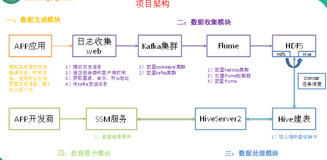
1）手机APP启动时，上报启动日志、错误日志、页面日志、事件日志、使用时长日志等信息到日志收集服务器。
2）日志收集服务器将收集到的日志信息发送给kafka。
3）Flume分别消费kafka中的5种主题信息，并把数据存储到HDFS上。
4）通过crontab任务调度定时把HDFS中的信息拷贝到Hive数据仓库中。
5）核心业务操作采用Hive查询。
6）查询结果通过数据展示平台展示。
3.2 项目目录结构
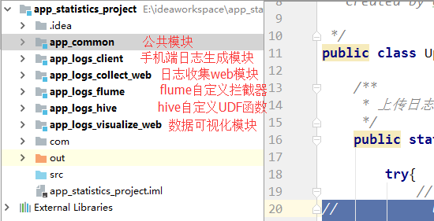
3.3 项目技术选型
1）Kafka_2.11-0.11.0.0
2）Zookeeper3.4.10
3）Hadoop2.7.2
4）Flume1.7.0
5）Tomcat7.0.72
6）Mysql 5.6.24
7）SSM框架
8）echarts.js
3.4 项目整体集群规划
|
Hadoop102主机
|
Hadoop103主机
|
Hadoop104主机
|
|
Zookeeper3.4.10
|
Zookeeper3.4.10
|
Zookeeper3.4.10
|
|
kafka_2.11-0.11.0.0
|
kafka_2.11-0.11.0.0
|
kafka_2.11-0.11.0.0
|
|
Flume1.7.0
|
|
|
|
Hadoop2.7.2(namenode)
Hadoop(datanode)
|
Hadoop2.7.2(datanode)
|
Hadoop2.7.2(datanode)
Hadoop(secondarynamenode)
|
|
Hadoop(nodemanager)
|
Hadoop(nodemanager)
Hadoop(resourcemanager)
|
Hadoop(nodemanager)
|
|
Tomcat7.0.72
|
|
|
|
|
Hive1.2.1
|
|
|
Mysql 5.6.24
|
|
|
3.5 创建项目工程
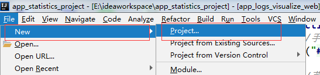
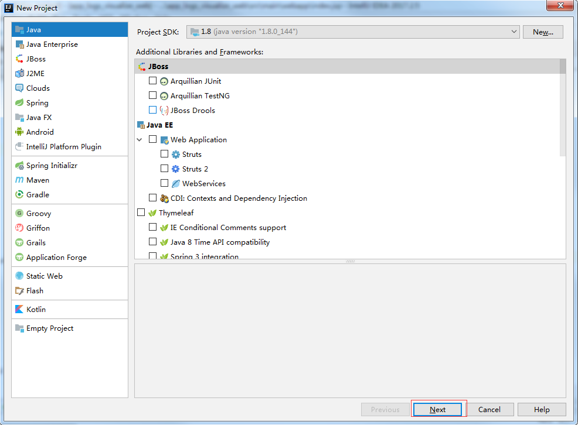
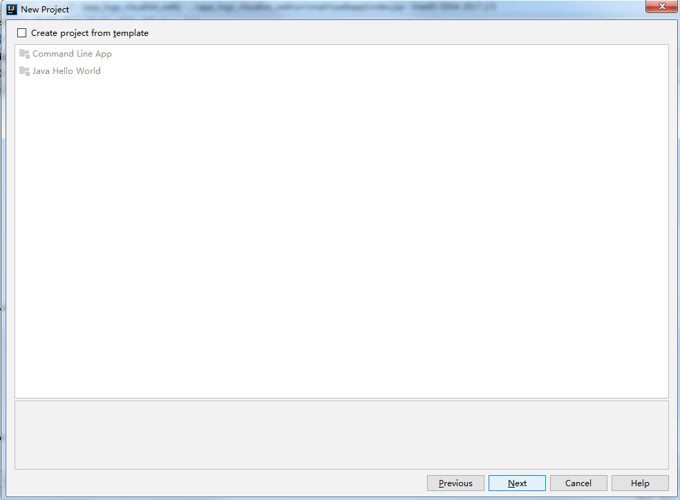
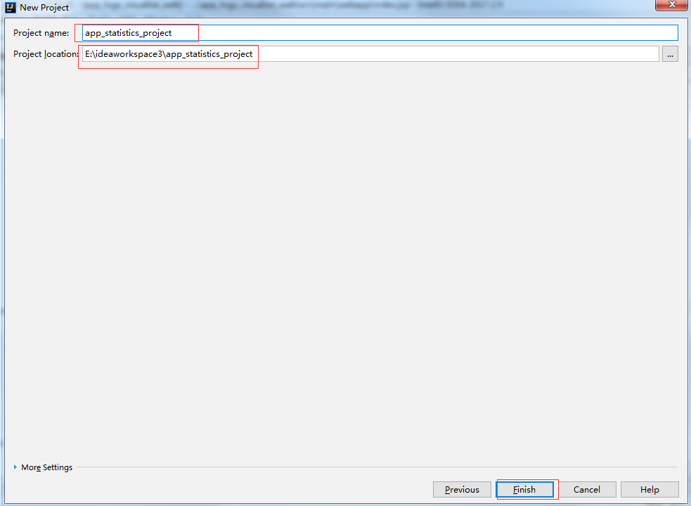
四 APP数据生成模块
4.1 创建公共模块工程
4.1.1 创建Java工程，导入pom文件
1）创建app_logs_common工程，主要用于编写公共的javabean和工具类。
2）添加maven
在app_logs_common模块上方右键，选择Add Framework Support…->勾选maven，然后点击OK。
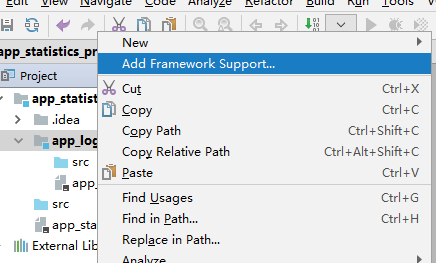
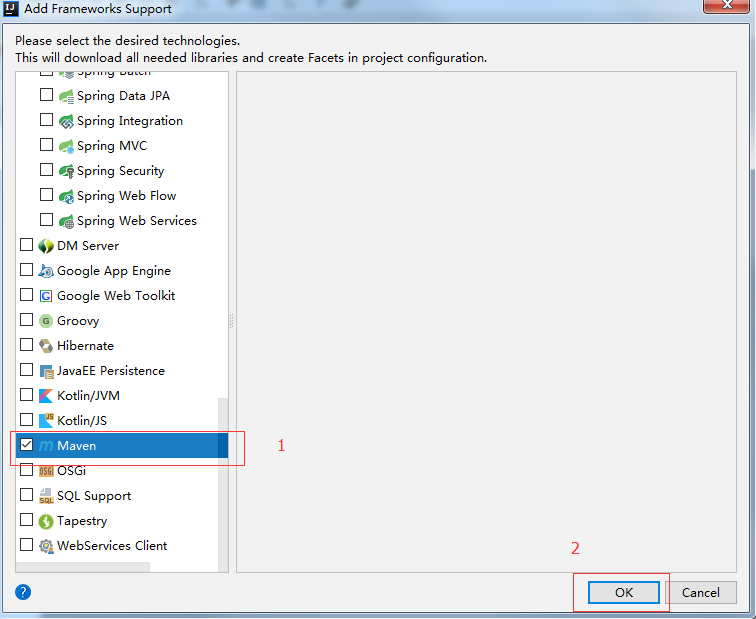
3）导入pom文件，并刷新一下maven
|
<?xml
version="1.0" encoding="UTF-8"?>
<project
xmlns="http://maven.apache.org/POM/4.0.0"
xmlns:xsi="http://www.w3.org/2001/XMLSchema-instance"
xsi:schemaLocation="http://maven.apache.org/POM/4.0.0
http://maven.apache.org/xsd/maven-4.0.0.xsd">
<modelVersion>4.0.0</modelVersion>
<groupId>com.atguigu</groupId>
<artifactId>app_common</artifactId>
<version>1.0-SNAPSHOT</version>
<dependencies>
<!--地理信息工具类-->
<dependency>
<groupId>com.maxmind.db</groupId>
<artifactId>maxmind-db</artifactId>
<version>1.0.0</version>
</dependency>
<!--地理信息工具类，类加载-->
<dependency>
<groupId>org.springframework</groupId>
<artifactId>spring-core</artifactId>
<version>4.3.4.RELEASE</version>
</dependency>
</dependencies>
</project>
|
4.1.2 创建AppBaseLog基类
1）创建package：com.atguigu.app.common
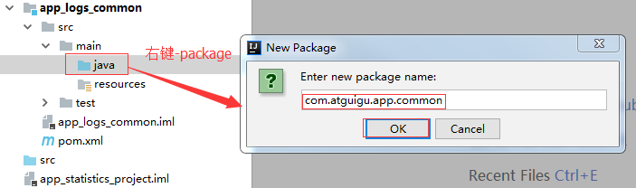
2）编写具体的类
|
package com.atguigu.app.common;
import java.io.Serializable;
/**
* AppBaseLog
*/
public class AppBaseLog implements Serializable {
private Long createdAtMs; //日志创建时间
private
String appId; //应用唯一标识
private
String tenantId; //租户唯一标识,企业用户
private
String deviceId; //设备唯一标识
private
String appVersion; //版本
private
String appChannel; //渠道,安装时就在清单中制定了，appStore等。
private
String appPlatform; //平台
private
String osType; //操作系统
private
String deviceStyle; //机型
public
Long getCreatedAtMs() {
return createdAtMs;
}
public void setCreatedAtMs(Long
createdAtMs) {
this.createdAtMs =
createdAtMs;
}
public String getAppId() {
return appId;
}
public void setAppId(String
appId) {
this.appId =
appId;
}
public String getTenantId()
{
return tenantId;
}
public void setTenantId(String
tenantId) {
this.tenantId =
tenantId;
}
public String getDeviceId()
{
return deviceId;
}
public void setDeviceId(String
deviceId) {
this.deviceId =
deviceId;
}
public String
getAppVersion() {
return appVersion;
}
public void setAppVersion(String
appVersion) {
this.appVersion =
appVersion;
}
public String
getAppChannel() {
return appChannel;
}
public void setAppChannel(String
appChannel) {
this.appChannel =
appChannel;
}
public String getAppPlatform()
{
return appPlatform;
}
public void setAppPlatform(String
appPlatform) {
this.appPlatform =
appPlatform;
}
public String getOsType() {
return osType;
}
public void setOsType(String
osType) {
this.osType =
osType;
}
public String
getDeviceStyle() {
return deviceStyle;
}
public void setDeviceStyle(String
deviceStyle) {
this.deviceStyle =
deviceStyle;
}
}
|
4.1.3 创建AppErrorLog错误日志类
|
package com.atguigu.app.common;
/**
* 应用上报的app错误日志相关信息
*/
public class AppErrorLog
extends AppBaseLog {
private String errorBrief; //错误摘要
private
String errorDetail; //错误详情
public
String getErrorBrief() {
return errorBrief;
}
public void setErrorBrief(String
errorBrief) {
this.errorBrief =
errorBrief;
}
public String
getErrorDetail() {
return errorDetail;
}
public void setErrorDetail(String
errorDetail) {
this.errorDetail =
errorDetail;
}
}
|
4.1.4 创建AppEventLog事件日志类
|
package com.atguigu.app.common;
import java.util.Map;
/**
* 应用上报的事件相关信息
*/
public class AppEventLog
extends AppBaseLog {
private String eventId; //事件唯一标识
private
Long eventDurationSecs; //事件持续时长
private
Map<String,String> paramKeyValueMap; //参数名/值对
public
String getEventId() {
return eventId;
}
public void setEventId(String
eventId) {
this.eventId =
eventId;
}
public Long
getEventDurationSecs() {
return eventDurationSecs;
}
public void setEventDurationSecs(Long
eventDurationSecs) {
this.eventDurationSecs
= eventDurationSecs;
}
public Map<String,
String> getParamKeyValueMap() {
return paramKeyValueMap;
}
public void setParamKeyValueMap(Map<String,
String> paramKeyValueMap) {
this.paramKeyValueMap
= paramKeyValueMap;
}
}
|
4.1.5 创建AppPageLog页面日志类
|
package com.atguigu.app.common;
/**
* 应用上报的页面相关信息
*/
public class AppPageLog
extends AppBaseLog {
private String pageId; //页面id
private
int visitIndex = 0; //访问顺序号，0为第一个页面
private
String nextPage; //下一个访问页面，如为空则表示为退出应用的页面
private
Long stayDurationSecs = (long)
0; //当前页面停留时长
public
String getPageId() {
return pageId;
}
public void setPageId(String
pageId) {
this.pageId =
pageId;
}
public int getVisitIndex() {
return visitIndex;
}
public void setVisitIndex(int
visitIndex) {
this.visitIndex =
visitIndex;
}
public String getNextPage()
{
return nextPage;
}
public void setNextPage(String
nextPage) {
this.nextPage =
nextPage;
}
public Long
getStayDurationSecs() {
return stayDurationSecs;
}
public void setStayDurationSecs(Long
stayDurationSecs) {
this.stayDurationSecs
= stayDurationSecs;
}
}
|
4.1.6 创建AppStartupLog启动日志类
|
package com.atguigu.app.common;
/**
* 启动日志
*/
public class AppStartupLog
extends AppBaseLog {
private String country; //国家，终端不用上报，服务器自动填充该属性
private
String province; //省份，终端不用上报，服务器自动填充该属性
private
String ipAddress; //ip地址
private
String network; //网络
private
String carrier; //运营商
private
String brand; //品牌
private
String screenSize; //分辨率
public
String getCountry() {
return country;
}
public void setCountry(String
country) {
this.country =
country;
}
public String getProvince()
{
return province;
}
public void setProvince(String
province) {
this.province =
province;
}
public String getIpAddress()
{
return ipAddress;
}
public void setIpAddress(String
ipAddress) {
this.ipAddress =
ipAddress;
}
public String getNetwork() {
return network;
}
public void setNetwork(String
network) {
this.network =
network;
}
public String getCarrier() {
return carrier;
}
public void setCarrier(String
carrier) {
this.carrier =
carrier;
}
public String getBrand() {
return brand;
}
public void setBrand(String
brand) {
this.brand =
brand;
}
public String
getScreenSize() {
return screenSize;
}
public void setScreenSize(String
screenSize) {
this.screenSize =
screenSize;
}
}
|
4.1.7 创建AppUsageLog使用时长日志类
|
package com.atguigu.app.common;
/**
* 应用上报的使用时长相关信息
*/
public class AppUsageLog
extends AppBaseLog {
private Long singleUseDurationSecs; //单次使用时长(秒数),指一次启动内应用在前台的持续时长
private
Long singleUploadTraffic; //单次使用过程中的上传流量
private
Long singleDownloadTraffic; //单次使用过程中的下载流量
public
Long getSingleUseDurationSecs() {
return singleUseDurationSecs;
}
public void setSingleUseDurationSecs(Long
singleUseDurationSecs) {
this.singleUseDurationSecs
= singleUseDurationSecs;
}
public Long
getSingleUploadTraffic() {
return singleUploadTraffic;
}
public void setSingleUploadTraffic(Long
singleUploadTraffic) {
this.singleUploadTraffic
= singleUploadTraffic;
}
public Long
getSingleDownloadTraffic() {
return singleDownloadTraffic;
}
public void setSingleDownloadTraffic(Long
singleDownloadTraffic) {
this.singleDownloadTraffic
= singleDownloadTraffic;
}
}
|
4.1.8 创建AppLogEntity地理信息类
|
package com.atguigu.app.common;
/**
* AppLog实体类
* 内部含有各种日志时间的集合。
*/
public class AppLogEntity
extends AppBaseLog{
private AppStartupLog[] appStartupLogs; //启动相关信息的数组
private
AppPageLog[] appPageLogs; //页面跳转相关信息的数组
private
AppEventLog[] appEventLogs; //事件相关信息的数组
private
AppUsageLog[] appUsageLogs; //app使用情况相关信息的数组
private
AppErrorLog[] appErrorLogs; //错误相关信息的数组
public
AppStartupLog[] getAppStartupLogs() {
return appStartupLogs;
}
public void setAppStartupLogs(AppStartupLog[]
appStartupLogs) {
this.appStartupLogs =
appStartupLogs;
}
public AppPageLog[]
getAppPageLogs() {
return appPageLogs;
}
public void setAppPageLogs(AppPageLog[]
appPageLogs) {
this.appPageLogs =
appPageLogs;
}
public AppEventLog[]
getAppEventLogs() {
return appEventLogs;
}
public void setAppEventLogs(AppEventLog[]
appEventLogs) {
this.appEventLogs =
appEventLogs;
}
public AppUsageLog[]
getAppUsageLogs() {
return appUsageLogs;
}
public void setAppUsageLogs(AppUsageLog[]
appUsageLogs) {
this.appUsageLogs =
appUsageLogs;
}
public AppErrorLog[]
getAppErrorLogs() {
return appErrorLogs;
}
public void setAppErrorLogs(AppErrorLog[]
appErrorLogs) {
this.appErrorLogs =
appErrorLogs;
}
}
|
4.1.9 创建GeoInfo地理信息类
|
package com.atguigu.app.common;
/**
* 地理信息
*/
public class GeoInfo
{
private String country ;
private String province ;
public String getCountry() {
return country;
}
public void setCountry(String
country) {
this.country =
country;
}
public String getProvince() {
return province;
}
public void setProvince(String
province) {
this.province =
province;
}
}
|
4.1.10 创建GeoUtil地理信息工具类
1）创建一个工具类包：com.atguigu.app.utils
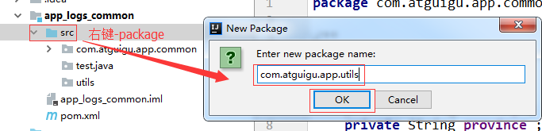
2）编写工具类：
地理信息数据库官方地址：https://www.maxmind.com/zh/geoip2-databases
API使用说明：http://maxmind.github.io/GeoIP2-java/
|
package com.atguigu.app.utils;
import com.atguigu.app.common.GeoInfo;
import com.fasterxml.jackson.databind.JsonNode;
import com.maxmind.db.Reader;
import org.springframework.core.io.ClassPathResource;
import org.springframework.core.io.Resource;
import java.io.IOException;
import java.io.InputStream;
import java.net.InetAddress;
/**
* 地理工具类，实现通过ip查找地址区域
*/
public class GeoUtil
{
private static InputStream in;
private static Reader reader;
/**
* 获得国家数据
*/
public
static String getCountry(String ip) {
try {
Resource resource = new ClassPathResource("GeoLite2-City.mmdb");
reader = new Reader(resource.getFile());
if (reader !=
null) {
JsonNode node = reader.get(InetAddress.getByName(ip));
if (node != null){
JsonNode
countryNode = node.get("country");
if (countryNode
!= null ){
JsonNode
namesNode = countryNode.get("names");
if (namesNode
!= null){
JsonNode
zhNode = namesNode.get("zh-CN");
if (zhNode !=
null){
return
zhNode.textValue();
}
}
}
}
}
} catch (Exception e) {
e.printStackTrace();
}finally {
if (reader !=
null){
try {
reader.close();
} catch (IOException
e) {
e.printStackTrace();
}
}
}
return "";
}
/**
* 获得省份数据
*/
public
static String getProvince(String ip) {
try {
Resource resource = new ClassPathResource("GeoLite2-City.mmdb");
reader = new Reader(resource.getFile());
if (reader !=
null) {
JsonNode node = reader.get(InetAddress.getByName(ip));
if (node != null){
JsonNode
subdivisionsNode = node.get("subdivisions");
if (subdivisionsNode
!= null){
JsonNode
areaNode = subdivisionsNode.get(0);
if (areaNode
!= null){
JsonNode
namesNode = areaNode.get("names");
if (namesNode
!= null){
JsonNode zhNode
= namesNode.get("zh-CN");
if (zhNode
!= null){
return
zhNode.textValue();
}
}
}
}
}
}
} catch (Exception e) {
e.printStackTrace();
}finally {
if (reader !=
null){
try {
reader.close();
} catch (IOException e) {
e.printStackTrace();
}
}
}
return "";
}
}
|
4.2 编写手机客户端工程
4.2.1 创建Java工程，导入pom文件
1）创建app_logs_client模块
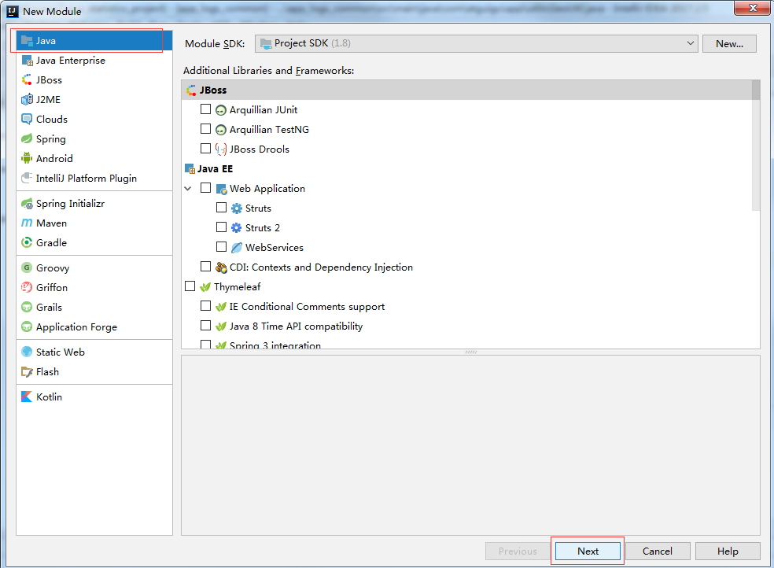
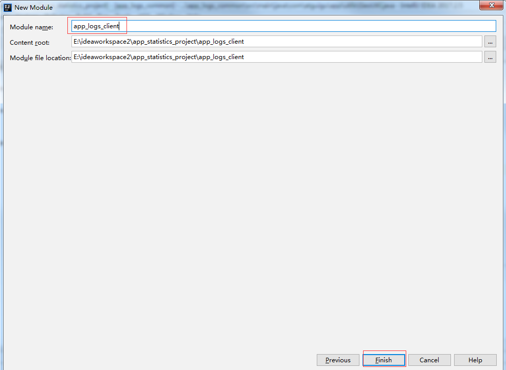
2）添加maven
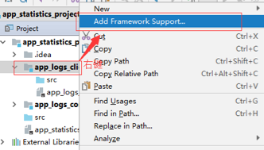
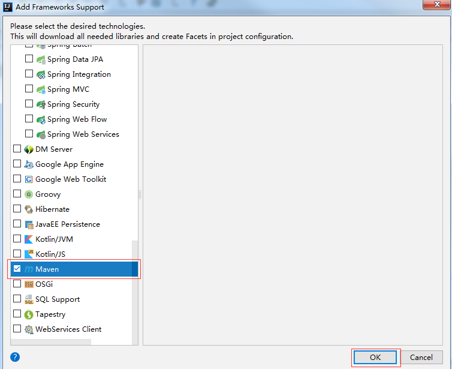
3）导入pom文件，并刷新一下maven
|
<?xml
version="1.0" encoding="UTF-8"?>
<project
xmlns="http://maven.apache.org/POM/4.0.0"
xmlns:xsi="http://www.w3.org/2001/XMLSchema-instance"
xsi:schemaLocation="http://maven.apache.org/POM/4.0.0
http://maven.apache.org/xsd/maven-4.0.0.xsd">
<modelVersion>4.0.0</modelVersion>
<groupId>com.atguigu</groupId>
<artifactId>app_logs_client</artifactId>
<version>1.0-SNAPSHOT</version>
<dependencies>
<dependency>
<groupId>com.atguigu</groupId>
<artifactId>app_common</artifactId>
<version>1.0-SNAPSHOT</version>
</dependency>
<!--json解析-->
<dependency>
<groupId>com.alibaba</groupId>
<artifactId>fastjson</artifactId>
<version>1.2.6</version>
</dependency>
</dependencies>
</project>
|
4.2.2 创建GenerateData数据生成类
1）创建package：com.atguigu.app.client
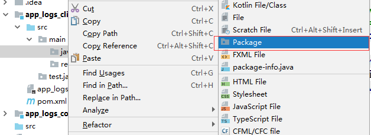
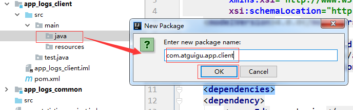
2）编写代码
|
package com.atguigu.app.client;
import com.alibaba.fastjson.JSONObject;
import com.atguigu.app.common.*;
import java.util.HashMap;
import java.util.Map;
import java.util.Random;
/**
* Created by atguigu on 2017/10/25
*/
public class GenerateData {
// 0 创建随机数对象
private
static Random random = new Random();
// 1 准备没类log的属性值
// 1.1 功能属性值
private
static Long[] createdAtMsS = initCreatedAtMs();//日志创建时间
private
static String appId = "sdk34734";//应用唯一标识
private
static String[] tenantIds = {"cake"};//租户唯一标识,企业用户
private
static String[] deviceIds = initDeviceId();//设备唯一标识
private
static String[] appVersions = {"3.2.1",
"3.2.2"};//版本
private
static String[] appChannels = {"youmeng1",
"youmeng2"};//渠道,安装时就在清单中制定了，appStore等。
private
static String[] appPlatforms = {"android",
"ios"};//平台
private
static String[] osTypes = {"8.3",
"7.1.1"};//操作系统
private
static String[] deviceStyles = {"iPhone
6", "iPhone 6 Plus", "红米手机1s"};//机型
// 1.1.1 初始化设备id
private
static String[] initDeviceId() {
String base = "device22";
String[] result = new String[100];
for (int i = 0; i
< 100; i++) {
result[i] = base + i + "";
}
return result;
}
// 1.1.2 初始化创建时间
private
static Long[] initCreatedAtMs() {
Long createdAtMs = System.currentTimeMillis();
Long[] result = new Long[11];
for (int i = 0; i
< 10; i++) {
result[i] = createdAtMs - (long)
(i * 24 * 3600 * 1000);
}
result[10] = createdAtMs;
return result;
}
// 1.2 启动日志属性值
private
static String[] countrys = {"America",
"china"};//国家，终端不用上报，服务器自动填充该属性
private
static String[] provinces = {"Washington",
"jiangxi", "beijing"};//省份，终端不用上报，服务器自动填充该属性
private
static String[] networks = {"WiFi",
"CellNetwork"};//网络
private
static String[] carriers = {"中国移动", "中国电信", "EE"};//运营商
private
static String[] brands = {"三星", "华为", "Apple", "魅族", "小米", "锤子"};//品牌
private
static String[] screenSizes = {"1136*640",
"960*640", "480*320"};//分辨率
// 1.3 事件日志属性值
private
static String[] eventIds = {"popMenu",
"autoImport", "BookStore"}; //事件唯一标识
private
static Long[] eventDurationSecsS = {new
Long(25), new Long(67), new Long(45)};//事件持续时长
static
Map<String, String> map1 = new HashMap<String,
String>() {
{
put("testparam1key",
"testparam1value");
put("testparam2key",
"testparam2value");
}
};
static Map<String,
String> map2 = new HashMap<String, String>() {
{
put("testparam3key",
"testparam3value");
put("testparam4key",
"testparam4value");
}
};
private static Map[] paramKeyValueMapsS
= {map1, map2};//参数名/值对
// 1.4 使用时长日志属性值
private
static Long[] singleUseDurationSecsS = initSingleUseDurationSecs();//单次使用时长(秒数),指一次启动内应用在前台的持续时长
// 1.4.1 单次使用时长
private
static Long[] initSingleUseDurationSecs() {
Long[] result = new Long[200];
for (int i = 1; i
< 200; i++) {
result[i] = (long) random.nextInt(200);
}
return result;
}
// 1.5 错误日志属性值
private
static String[] errorBriefs = {"at
cn.lift.dfdf.web.AbstractBaseController.validInbound(AbstractBaseController.java:72)",
"at
cn.lift.appIn.control.CommandUtil.getInfo(CommandUtil.java:67)"}; //错误摘要
private
static String[] errorDetails = {"java.lang.NullPointerException\\n " + "at
cn.lift.appIn.web.AbstractBaseController.validInbound(AbstractBaseController.java:72)\\n
" + "at
cn.lift.dfdf.web.AbstractBaseController.validInbound", "at
cn.lift.dfdfdf.control.CommandUtil.getInfo(CommandUtil.java:67)\\n " +
"at
sun.reflect.DelegatingMethodAccessorImpl.invoke(DelegatingMethodAccessorImpl.java:43)\\n"
+ " at java.lang.reflect.Method.invoke(Method.java:606)\\n"}; //错误详情
// 1.6 页面使用情况日志属性值
private
static String[] pageIds = {"list.html",
"main.html", "test.html"};//页面id
private
static int[] visitIndexs = {0, 1, 2, 3,
4};//访问顺序号，0为第一个页面
private
static String[] nextPages = {"list.html",
"main.html", "test.html", null}; //下一个访问页面，如为空则表示为退出应用的页面
private
static Long[] stayDurationSecsS = {new Long(45),
new Long(2), new Long(78)};//当前页面停留时长
// 2 初始化五类log的数据
//启动相关信息的数组
private
static AppStartupLog[] appStartupLogs = initAppStartupLogs();
//页面跳转相关信息的数组
private
static AppPageLog[] appPageLogs = initAppPageLogs();
//事件相关信息的数组
private
static AppEventLog[] appEventLogs = initAppEventLogs();
//app使用情况相关信息的数组
private
static AppUsageLog[] appUsageLogs = initAppUsageLogs();
//错误相关信息的数组
private
static AppErrorLog[] appErrorLogs = initAppErrorLogs();
// 2.1 初始化每类log的公共属性值
private
static void initLogCommon(AppBaseLog baselog){
// 日志创建时间
baselog.setCreatedAtMs(System.currentTimeMillis());
// appid
baselog.setAppId(appId);
// 租户唯一标识,企业用户
String
tenantId = tenantIds[random.nextInt(tenantIds.length)];
if (tenantId != null)
{
baselog.setTenantId(tenantId);
}
baselog.setTenantId(tenantIds[random.nextInt(tenantIds.length)]);
// 设备唯一标识
baselog.setDeviceId(deviceIds[random.nextInt(deviceIds.length)]);
// 版本
baselog.setAppVersion(appVersions[random.nextInt(appVersions.length)]);
// 渠道
baselog.setAppChannel(appChannels[random.nextInt(appChannels.length)]);
// 平台
baselog.setAppPlatform(appPlatforms[random.nextInt(appPlatforms.length)]);
// 操作系统
baselog.setOsType(osTypes[random.nextInt(osTypes.length)]);
// 机型
baselog.setDeviceStyle(deviceStyles[random.nextInt(deviceStyles.length)]);
}
// 2.2 启动相关信息的数组
private
static AppStartupLog[] initAppStartupLogs() {
AppStartupLog[] result = new
AppStartupLog[10];
for (int i = 0; i
< 10; i++) {
AppStartupLog appStartupLog
= new AppStartupLog();
// 初始化公共屬性值
initLogCommon(appStartupLog);
//国家
appStartupLog.setCountry(countrys[random.nextInt(countrys.length)]);
//省份
appStartupLog.setProvince(provinces[random.nextInt(provinces.length)]);
//网络
appStartupLog.setNetwork(networks[random.nextInt(networks.length)]);
//运营商
appStartupLog.setCarrier(carriers[random.nextInt(carriers.length)]);
//品牌
appStartupLog.setBrand(brands[random.nextInt(brands.length)]);
//分辨率
appStartupLog.setScreenSize(screenSizes[random.nextInt(screenSizes.length)]);
result[i] = appStartupLog;
}
return result;
}
// 2.3 页面跳转相关信息的数组
private
static AppPageLog[] initAppPageLogs() {
AppPageLog[] result = new AppPageLog[10];
for (int i = 0; i
< 10; i++) {
AppPageLog appPageLog = new
AppPageLog();
// 初始化公共屬性值
initLogCommon(appPageLog);
// 页面id
String pageId = pageIds[random.nextInt(pageIds.length)];
appPageLog.setPageId(pageId);
// 访问頁面顺序号
int visitIndex = visitIndexs[random.nextInt(visitIndexs.length)];
appPageLog.setVisitIndex(visitIndex);
// 下一个访问页面，如为空则表示为退出应用的页面
String nextPage = nextPages[random.nextInt(nextPages.length)];
while (pageId.equals(nextPage))
{
nextPage = nextPages[random.nextInt(nextPages.length)];
}
appPageLog.setNextPage(nextPage);
//当前页面停留时长
Long stayDurationSecs = stayDurationSecsS[random.nextInt(stayDurationSecsS.length)];
appPageLog.setStayDurationSecs(stayDurationSecs);
result[i] = appPageLog;
}
return result;
}
// 2.4 事件相关信息的数组
private
static AppEventLog[] initAppEventLogs() {
AppEventLog[] result = new AppEventLog[10];
for (int i = 0; i
< 10; i++) {
AppEventLog appEventLog = new
AppEventLog();
// 初始化公共屬性值
initLogCommon(appEventLog);
//事件唯一标识
appEventLog.setEventId(eventIds[random.nextInt(eventIds.length)]);
//事件持续时长
appEventLog.setEventDurationSecs(eventDurationSecsS[random.nextInt(eventDurationSecsS.length)]);
// 事件参数
appEventLog.setParamKeyValueMap(paramKeyValueMapsS[random.nextInt(paramKeyValueMapsS.length)]);
result[i] = appEventLog;
}
return result;
}
// 2.5 app使用情况相关信息的数组
private
static AppUsageLog[] initAppUsageLogs() {
AppUsageLog[] result = new AppUsageLog[10];
for (int i = 0; i
< 10; i++) {
AppUsageLog appUsageLog = new
AppUsageLog();
// 初始化公共屬性值
initLogCommon(appUsageLog);
//单次使用时长(秒数),指一次启动内应用在前台的持续时长
appUsageLog.setSingleUseDurationSecs(singleUseDurationSecsS[random.nextInt(singleUseDurationSecsS.length)]);
result[i] = appUsageLog;
}
return result;
}
// 2.6 错误相关信息的数组
private
static AppErrorLog[] initAppErrorLogs() {
AppErrorLog[] result = new AppErrorLog[10];
for (int i = 0; i
< 10; i++) {
AppErrorLog appErrorLog = new
AppErrorLog();
initLogCommon(appErrorLog);
//错误摘要
appErrorLog.setErrorBrief(errorBriefs[random.nextInt(errorBriefs.length)]);
//错误详情
appErrorLog.setErrorDetail(errorDetails[random.nextInt(errorDetails.length)]);
result[i] = appErrorLog;
}
return result;
}
// 3 循环发送数据
public
static void main(String[] args) {
//发送数据
for
(int i = 1; i <= 200000000; i++) {
AppLogEntity logEntity = new
AppLogEntity();
// 封装5种log数据
logEntity.setAppStartupLogs(new AppStartupLog[]{appStartupLogs[random.nextInt(appStartupLogs.length)]});
logEntity.setAppEventLogs(new AppEventLog[]{appEventLogs[random.nextInt(appEventLogs.length)]});
logEntity.setAppErrorLogs(new
AppErrorLog[]{appErrorLogs[random.nextInt(appErrorLogs.length)]});
logEntity.setAppPageLogs(new
AppPageLog[]{appPageLogs[random.nextInt(appPageLogs.length)]});
logEntity.setAppUsageLogs(new
AppUsageLog[]{appUsageLogs[random.nextInt(appUsageLogs.length)]});
try {
// 将对象转换成json string
String json = JSONObject.toJSONString(logEntity);
// 网络请求发送json数据
UploadUtil.upload(json);
// 每隔5秒发送一条数据
Thread.sleep(5000);
} catch (Exception e)
{
e.printStackTrace();
}
}
}
}
|
4.2.3 创建数据上传的工具类
|
package com.atguigu.app.client;
import java.io.OutputStream;
import java.net.HttpURLConnection;
import java.net.URL;
/**
* Created by atguigu on 2017/10/25
*/
public class UploadUtil {
/**
* 上传日志
*/
public
static void upload(String json) throws Exception
{
try{
// 1 设置请求的URL
// URL url = new
URL("http://hadoop102:8080/app_logs/coll/index");// 生产地址
URL url = new URL("http://localhost:8080/coll/index");//
测试地址
// 2 获取连接
HttpURLConnection conn = (HttpURLConnection) url.openConnection();
// 2.1 设置请求方式为post
conn.setRequestMethod("POST");
// 2.2 允许上传数据
conn.setDoOutput(true);
// 2.3 时间头用来供server进行时钟校对的
conn.setRequestProperty("clientTime",System.currentTimeMillis()
+ "");
// 2.4 设置请求的头信息,设置内容类型
conn.setRequestProperty("Content-Type", "application/json");
// 3 获取输出流
OutputStream out = conn.getOutputStream();
// 3.1 向输出流里面写数据
out.write(json.getBytes());
out.flush();
// 3.2 关闭资源
out.close();
// 4 获取响应码
int
code = conn.getResponseCode();
System.out.println(code);
}
catch (Exception e){
e.printStackTrace();
}
}
}
|
五 数据收集模块
5.1 Web数据收集模块
5.1.0 数据收集模块集群部署规划
|
Hadoop102主机
|
Hadoop103主机
|
Hadoop104主机
|
|
Zookeeper3.4.10
|
Zookeeper3.4.10
|
Zookeeper3.4.10
|
|
kafka_2.11-0.11.0.0
|
kafka_2.11-0.11.0.0
|
kafka_2.11-0.11.0.0
|
|
Flume1.7.0
|
|
|
|
Hadoop2.7.2(namenode)
Hadoop(datanode)
|
Hadoop2.7.2(datanode)
|
Hadoop2.7.2(datanode)
Hadoop(secondarynamenode)
|
|
Hadoop(nodemanager)
|
Hadoop(nodemanager)
Hadoop(resourcemanager)
|
Hadoop(nodemanager)
|
|
Tomcat7.0.72
|
|
|
5.1.1 创建web工程，导入pom文件
1）创建web工程：app_logs_collect_web
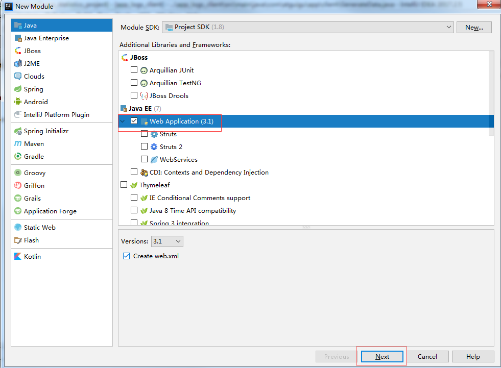
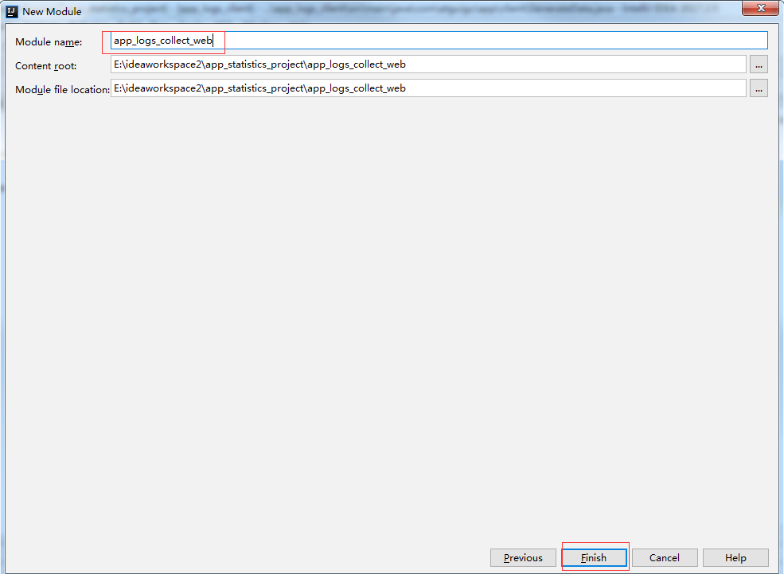
2）添加maven工具
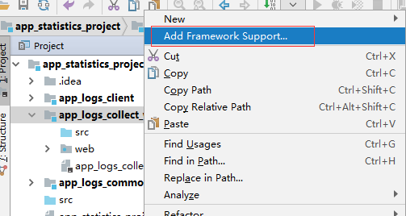
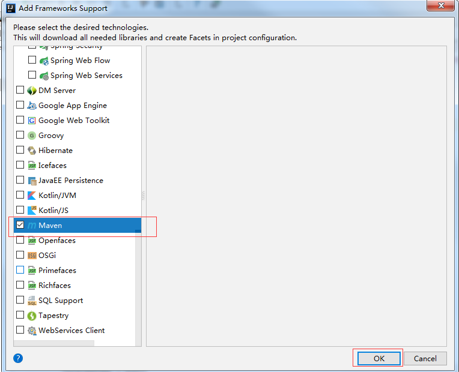
3）导入pom文件，并刷新一下maven
|
<?xml
version="1.0" encoding="UTF-8"?>
<project
xmlns="http://maven.apache.org/POM/4.0.0"
xmlns:xsi="http://www.w3.org/2001/XMLSchema-instance"
xsi:schemaLocation="http://maven.apache.org/POM/4.0.0
http://maven.apache.org/xsd/maven-4.0.0.xsd">
<modelVersion>4.0.0</modelVersion>
<groupId>com.atguigu</groupId>
<artifactId>app_logs_collect_web</artifactId>
<version>1.0-SNAPSHOT</version>
<packaging>war</packaging>
<!--tomcat插件-->
<build>
<plugins>
<plugin>
<groupId>org.apache.tomcat.maven</groupId>
<artifactId>tomcat7-maven-plugin</artifactId>
<version>2.2</version>
<configuration>
<!-- http port -->
<port>8080</port>
<path>/</path>
</configuration>
</plugin>
</plugins>
</build>
<!--日志框架版本号-->
<properties>
<log4j.version>1.2.17</log4j.version>
<slf4j.version>1.7.22</slf4j.version>
</properties>
<dependencies>
<!--spring框架-->
<dependency>
<groupId>org.springframework</groupId>
<artifactId>spring-context-support</artifactId>
<version>4.3.4.RELEASE</version>
</dependency>
<dependency>
<groupId>org.springframework</groupId>
<artifactId>spring-webmvc</artifactId>
<version>4.3.4.RELEASE</version>
</dependency>
<dependency>
<groupId>commons-io</groupId>
<artifactId>commons-io</artifactId>
<version>2.5</version>
</dependency>
<dependency>
<groupId>org.apache.commons</groupId>
<artifactId>commons-pool2</artifactId>
<version>2.4.2</version>
</dependency>
<dependency>
<groupId>javax.servlet</groupId>
<artifactId>javax.servlet-api</artifactId>
<version>3.0.1</version>
<scope>provided</scope>
</dependency>
<!--kafka框架-->
<dependency>
<groupId>org.apache.kafka</groupId>
<artifactId>kafka-clients</artifactId>
<version>0.10.2.1</version>
</dependency>
<!--打印日志框架-->
<dependency>
<groupId>org.slf4j</groupId>
<artifactId>jcl-over-slf4j</artifactId>
<version>${slf4j.version}</version>
</dependency>
<dependency>
<groupId>org.slf4j</groupId>
<artifactId>slf4j-api</artifactId>
<version>${slf4j.version}</version>
</dependency>
<dependency>
<groupId>org.slf4j</groupId>
<artifactId>slf4j-log4j12</artifactId>
<version>${slf4j.version}</version>
</dependency>
<dependency>
<groupId>log4j</groupId>
<artifactId>log4j</artifactId>
<version>${log4j.version}</version>
</dependency>
<!--jackson json解析框架-->
<dependency>
<groupId>com.fasterxml.jackson.core</groupId>
<artifactId>jackson-core</artifactId>
<version>2.8.8</version>
</dependency>
<dependency>
<groupId>com.fasterxml.jackson.core</groupId>
<artifactId>jackson-databind</artifactId>
<version>2.8.3</version>
</dependency>
<!--fastjson json解析框架-->
<dependency>
<groupId>com.alibaba</groupId>
<artifactId>fastjson</artifactId>
<version>1.2.24</version>
</dependency>
<!--项目公共模块-->
<dependency>
<groupId>com.atguigu</groupId>
<artifactId>app_common</artifactId>
<version>1.0-SNAPSHOT</version>
</dependency>
<!--加载地理信息-->
<dependency>
<groupId>com.maxmind.db</groupId>
<artifactId>maxmind-db</artifactId>
<version>1.0.0</version>
</dependency>
</dependencies>
</project>
|
5.1.2 在web.xml文件中加载Spring和Springmvc配置
|
<?xml
version="1.0" encoding="ISO-8859-1"?>
<web-app
version="3.0"
xmlns="http://java.sun.com/xml/ns/javaee"
xmlns:xsi="http://www.w3.org/2001/XMLSchema-instance"
xsi:schemaLocation="http://java.sun.com/xml/ns/javaee
http://java.sun.com/xml/ns/javaee/web-app_3_0.xsd">
<!--1 spring加载配置-->
<listener>
<listener-class>org.springframework.web.context.ContextLoaderListener</listener-class>
</listener>
<context-param>
<param-name>contextConfigLocation</param-name>
<param-value>classpath:beans.xml</param-value>
</context-param>
<!--2 springmvc加载配置-->
<servlet>
<servlet-name>dispatcher</servlet-name>
<servlet-class>org.springframework.web.servlet.DispatcherServlet</servlet-class>
<init-param>
<param-name>contextConfigLocation</param-name>
<param-value>classpath:dispatcher-servlet.xml</param-value>
</init-param>
<load-on-startup>1</load-on-startup>
</servlet>
<servlet-mapping>
<servlet-name>dispatcher</servlet-name>
<url-pattern>/</url-pattern>
</servlet-mapping>
<!--3 解决传输中文乱码-->
<filter>
<filter-name>CharacterEncodingFilter</filter-name>
<filter-class>org.springframework.web.filter.CharacterEncodingFilter</filter-class>
<init-param>
<param-name>encoding</param-name>
<param-value>UTF-8</param-value>
</init-param>
<init-param>
<param-name>forceEncoding</param-name>
<param-value>true</param-value>
</init-param>
</filter>
<filter-mapping>
<filter-name>CharacterEncodingFilter</filter-name>
<url-pattern>/*</url-pattern>
</filter-mapping>
</web-app>
|
5.1.3 在resources路径下添加Springmvc配置文件
dispatcher-servlet.xml
|
<?xml
version="1.0" encoding="UTF-8"?>
<beans
xmlns="http://www.springframework.org/schema/beans"
xmlns:xsi="http://www.w3.org/2001/XMLSchema-instance"
xmlns:util="http://www.springframework.org/schema/util"
xmlns:aop="http://www.springframework.org/schema/aop"
xmlns:p="http://www.springframework.org/schema/p"
xmlns:context="http://www.springframework.org/schema/context"
xmlns:mvc="http://www.springframework.org/schema/mvc"
xsi:schemaLocation="http://www.springframework.org/schema/beans
http://www.springframework.org/schema/beans/spring-beans.xsd
http://www.springframework.org/schema/util
http://www.springframework.org/schema/util/spring-util-3.2.xsd
http://www.springframework.org/schema/aop
http://www.springframework.org/schema/aop/spring-aop-3.2.xsd
http://www.springframework.org/schema/context
http://www.springframework.org/schema/context/spring-context-3.2.xsd
http://www.springframework.org/schema/mvc
http://www.springframework.org/schema/mvc/spring-mvc-3.2.xsd">
<!-- 配置扫描路径 -->
<context:component-scan
base-package="com.atguigu.applogs.collect.web.controller"/>
<!-- 使用注解驱动 -->
<mvc:annotation-driven/>
<!-- 内部资源视图解析器 -->
<bean
class="org.springframework.web.servlet.view.InternalResourceViewResolver">
<property
name="prefix" value="/"/>
<property
name="suffix" value=".jsp"/>
</bean>
</beans>
|
2）创建包名：com.atguigu.applogs.collect.web.controller
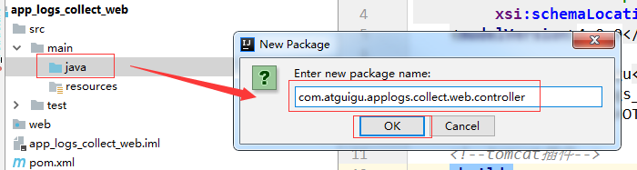
5.1.4 在resources路径下添加Spring配置文件
beans.xml
|
<?xml version="1.0"
encoding="UTF-8"?>
<beans xmlns="http://www.springframework.org/schema/beans"
xmlns:xsi="http://www.w3.org/2001/XMLSchema-instance"
xmlns:util="http://www.springframework.org/schema/util"
xmlns:aop="http://www.springframework.org/schema/aop"
xmlns:p="http://www.springframework.org/schema/p"
xmlns:context="http://www.springframework.org/schema/context"
xsi:schemaLocation="http://www.springframework.org/schema/beans
http://www.springframework.org/schema/beans/spring-beans.xsd
http://www.springframework.org/schema/util
http://www.springframework.org/schema/util/spring-util.xsd
http://www.springframework.org/schema/aop
http://www.springframework.org/schema/aop/spring-aop.xsd
http://www.springframework.org/schema/context
http://www.springframework.org/schema/context/spring-context.xsd
">
<!--配置路径扫描-->
<context:component-scan
base-package="com.atguigu.applogs.collect.web"/>
</beans>
|
5.1.5 在resources路径下添加log4j文件
log4j.properties
|
log4j.rootLogger=info, stdout
log4j.appender.stdout=org.apache.log4j.ConsoleAppender
log4j.appender.stdout.layout=org.apache.log4j.PatternLayout
log4j.appender.stdout.layout.ConversionPattern=%d{yyyy-MM-dd HH:mm:ss,SSS} %5p
--- [%50t] %-80c(line:%5L) :
%m%n
log4j.appender.R=org.apache.log4j.RollingFileAppender
log4j.appender.R.File=analysis.log
log4j.appender.R.MaxFileSize=1024KB
log4j.appender.R.MaxBackupIndex=1
log4j.appender.R.layout=org.apache.log4j.PatternLayout
log4j.appender.R.layout.ConversionPattern=%d{yyyy-MM-dd HH:mm:ss,SSS} %5p
--- [%50t] %-80c(line:%6L) :
%m%n
|
5.1.6 网络请求处理
编写代码
|
@Controller
@RequestMapping("/coll")
public class CollectLogController {
@RequestMapping(value = "/index", method =
RequestMethod.POST)
@ResponseBody
public AppLogEntity collect(@RequestBody AppLogEntity e,
HttpServletRequest req) {
// 1 修正服务器和客户端时间
verifyTime(e, req);
// 2 获取国家、省份和ip地址信息
processIp(e, req);
// 3 向Kafka发送消息
sendMessage(e);
return e;
}
}
|
5.1.7 修正服务器和客户端时间
1）分析
2）编码实现
|
// 修正时间
private void verifyTime(AppLogEntity
e, HttpServletRequest req) {
// 1 获取服务器时间
long
myTime = System.currentTimeMillis();
// 2 获取客户端时间
long
clientTime = Long.parseLong(req.getHeader("clientTime"));
// 3 计算服务器和客户端时间差
long
diff = myTime - clientTime;
// 4 根据时间差，修正日志中时间
for (AppStartupLog log : e.getAppStartupLogs()) {
log.setCreatedAtMs(log.getCreatedAtMs() + diff);
}
for (AppUsageLog log :
e.getAppUsageLogs()) {
log.setCreatedAtMs(log.getCreatedAtMs() + diff);
}
for (AppPageLog log :
e.getAppPageLogs()) {
log.setCreatedAtMs(log.getCreatedAtMs() + diff);
}
for (AppEventLog log :
e.getAppEventLogs()) {
log.setCreatedAtMs(log.getCreatedAtMs() + diff);
}
for (AppErrorLog log :
e.getAppErrorLogs()) {
log.setCreatedAtMs(log.getCreatedAtMs() + diff);
}
}
|
5.1.8 获取国家、省份、和IP地址信息
1）在resource路径下添加GeoLite2-City.mmdb资源
2）编码实现
根据ip地址查询国家和省份信息，并做缓存处理。
|
/**
* 处理ip client地址问题
* @param e
*/
private void processIp(AppLogEntity
e, HttpServletRequest req) {
// 1 获取客户端ip地址
String
clientIP = req.getRemoteAddr();
// 2 从缓存中获取数据
GeoInfo
geoInfo = cache.get(clientIP);
// 如果该客户端ip地址没有获取过国家和省份信息，则通过工具类获取；
// 如果该客户端ip地址已经获取过国家和省份信息，则直接从缓存对象中获取
if (geoInfo == null) {
geoInfo = new GeoInfo();
geoInfo.setCountry(GeoUtil.getCountry(clientIP));
geoInfo.setProvince(GeoUtil.getProvince(clientIP));
// 缓存数据
cache.put(clientIP, geoInfo);
}
// 3 设置国家、省份和客户端ip地址信息
for (AppStartupLog log : e.getAppStartupLogs()) {
log.setCountry(geoInfo.getCountry());
log.setProvince(geoInfo.getProvince());
log.setIpAddress(clientIP);
}
}
|
|
// 缓存地址信息
private Map<String,
GeoInfo> cache = new HashMap<String, GeoInfo>();
|
5.1.9 向Kafka发送消息
1）在app_common模块中在com.atguigu.app.common包下添加常量（5个topic主题）
|
package
com.atguigu.app.common;
/**
* 常量类
*/
public class Constants {
//主题
public static final String
TOPIC_APP_STARTUP = "topic_app_startup" ;
public static final String
TOPIC_APP_ERRROR = "topic_app_error" ;
public static final String
TOPIC_APP_EVENT = "topic_app_event" ;
public static final String
TOPIC_APP_USAGE = "topic_app_usage" ;
public static final String
TOPIC_APP_PAGE = "topic_app_page" ;
}
|
2）编写代码（app_logs_collect_web模块）
|
// 发送消息给发Kafka
private void sendMessage(AppLogEntity
e) {
// 1 创建配置对象
Properties
props = new Properties();
// 1.1 Kafka服务端的主机名和端口号
props.put("bootstrap.servers",
"hadoop102:9092");
// 1.2 等待所有副本节点的应答
props.put("acks",
"all");
// 1.3 消息发送最大尝试次数
props.put("retries",
0);
// 1.4 一批消息处理大小
props.put("batch.size",
16384);
// 1.5 请求延时
props.put("linger.ms",
1);
// 1.6 发送缓存区内存大小
props.put("buffer.memory",
33554432);
// 1.7 key序列化
props.put("key.serializer",
"org.apache.kafka.common.serialization.StringSerializer");
// 1.8 value序列化
props.put("value.serializer",
"org.apache.kafka.common.serialization.StringSerializer");
// 2 创建生产者
KafkaProducer<String,
String> producer = new KafkaProducer<String, String>(props);
// 3 根据日志类型分别向5个主题发送消息
sendSingleLog(producer,
Constants.TOPIC_APP_STARTUP, e.getAppStartupLogs());
sendSingleLog(producer, Constants.TOPIC_APP_ERRROR,
e.getAppErrorLogs());
sendSingleLog(producer, Constants.TOPIC_APP_EVENT,
e.getAppEventLogs());
sendSingleLog(producer, Constants.TOPIC_APP_PAGE,
e.getAppPageLogs());
sendSingleLog(producer, Constants.TOPIC_APP_USAGE,
e.getAppUsageLogs());
// 4 关闭生产者
producer.close();
}
|
|
/**
* 发送单个的log消息给kafka
*/
private void sendSingleLog(KafkaProducer<String,
String> producer, String topic, AppBaseLog[] logs) {
for (AppBaseLog log : logs)
{
// 1 将bean对象转换为json
String
logMsg = JSONObject.toJSONString(log);
// 2 创建待发送消息对象
ProducerRecord<String,
String> data = new ProducerRecord<String, String>(topic,
logMsg);
// 3 发送消息
producer.send(data);
}
}
|
5.1.10 IDEA上执行Web程序
1）调整web项目结构
（1）将web文件夹整体拖拽到main文件夹下，并修改名称为webapp
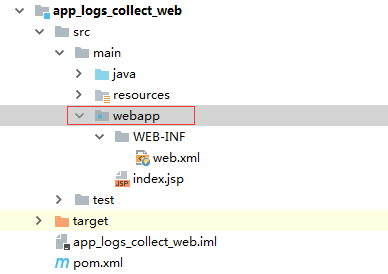
2）配置web执行程序方式
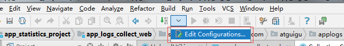
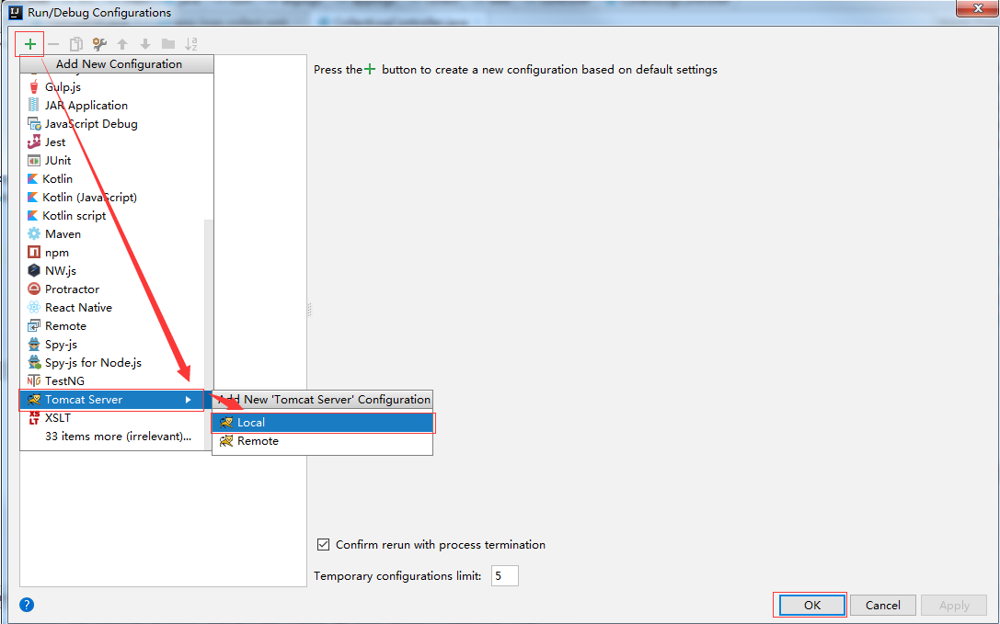
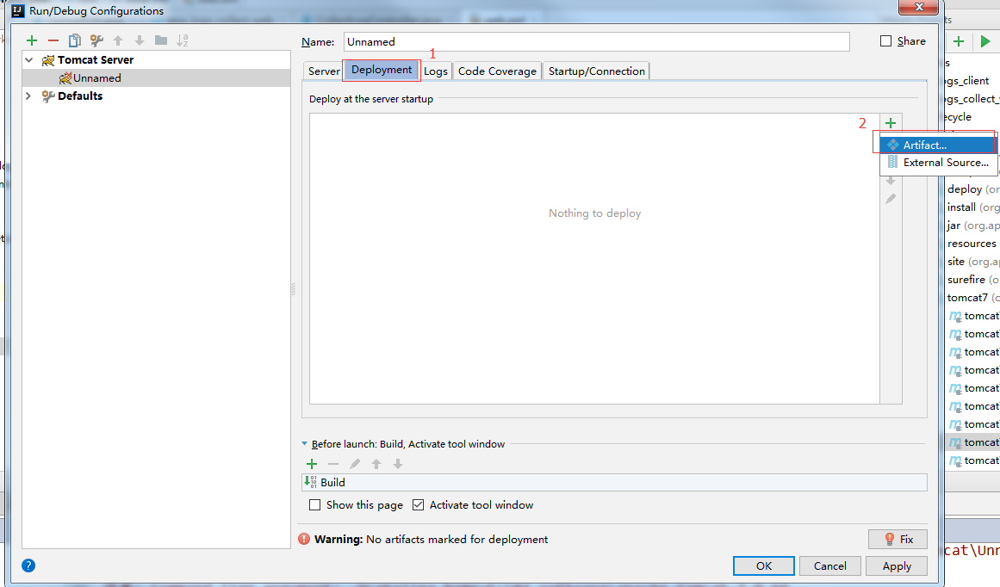

名称：app_logs_web
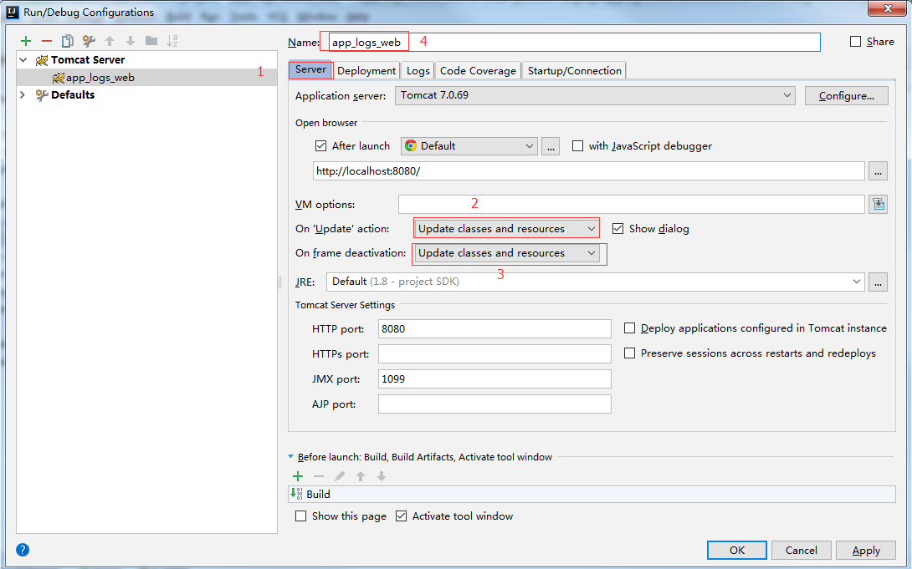
3）向web工程中添加jar包依赖
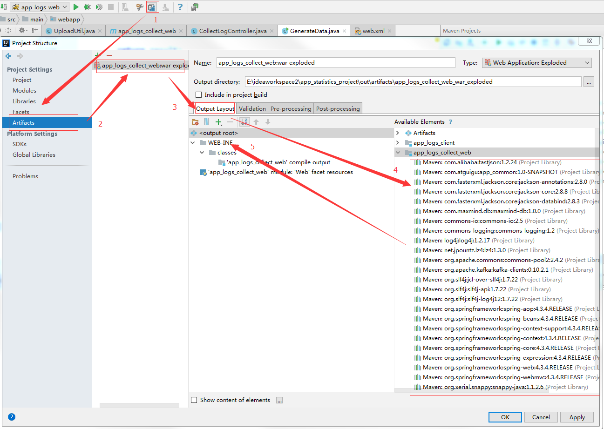
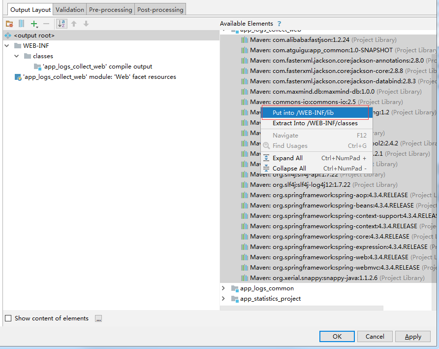
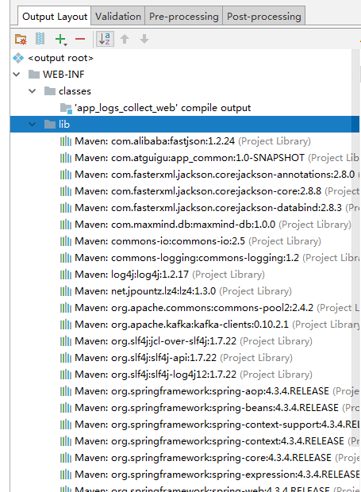
5.1.11 测试
1）启动tomact
2）启动日志生成程序，查看是否正确收到数据响应码200。
5.2 Kafka集群模块
5.2.1 配置Zookeeper集群
1）具体配置详见：RT大数据技术之Zookeeper.doc文档
2）启动zookeeper
[atguigu@hadoop102
zookeeper-3.4.10]$ bin/zkServer.sh start
[atguigu@hadoop103
zookeeper-3.4.10]$ bin/zkServer.sh start
[atguigu@hadoop104
zookeeper-3.4.10]$ bin/zkServer.sh start
5.2.2 配置Kafka集群
0）配置kafka集群，详见：RT大数据技术之Kafka.doc
1）启动kafka
[atguigu@hadoop102
kafka]$ bin/kafka-server-start.sh config/server.properties &
[atguigu@hadoop103
kafka]$ bin/kafka-server-start.sh config/server.properties &
[atguigu@hadoop104
kafka]$ bin/kafka-server-start.sh config/server.properties &
2）查看主题
[atguigu@hadoop102 kafka]$ bin/kafka-topics.sh
--zookeeper hadoop102:2181 --list
3）创建kafka的topic
[atguigu@hadoop102 kafka]$ bin/kafka-topics.sh
--zookeeper hadoop102:2181 --create --replication-factor 3 --partitions 1
--topic topic_app_startup;
[atguigu@hadoop102 kafka]$ bin/kafka-topics.sh
--zookeeper hadoop102:2181 --create --replication-factor 3 --partitions 1
--topic topic_app_error;
[atguigu@hadoop102 kafka]$ bin/kafka-topics.sh
--zookeeper hadoop102:2181 --create --replication-factor 3 --partitions 1
--topic topic_app_event;
[atguigu@hadoop102 kafka]$ bin/kafka-topics.sh
--zookeeper hadoop102:2181 --create --replication-factor 3 --partitions 1
--topic topic_app_usage;
[atguigu@hadoop102 kafka]$ bin/kafka-topics.sh
--zookeeper hadoop102:2181 --create --replication-factor 3 --partitions 1
--topic topic_app_page;
5.2.3 测试
1）创建消费者主题（主要用于测试数据是否能够接收到）
[atguigu@hadoop102 kafka]$ bin/kafka-console-consumer.sh
--zookeeper hadoop102:2181 --topic topic_app_startup;
2）启动日志生成程序。
3）观察kafka消费者是否正常消费到消息。
5.2.4 Centos上部署Tomcat
1）在linux上安装Tomcat
（1）将apache-tomcat-7.0.72.tar.gz导入到linux的/opt/software路径下
（2）解压apache-tomcat-7.0.72.tar.gz到/opt/module/路径下
[atguigu@hadoop102 software]$ tar -zxvf
apache-tomcat-7.0.72.tar.gz -C /opt/module/
（3）修改名称为tomcat
[atguigu@hadoop102 module]$ mv
apache-tomcat-7.0.72 tomcat
2）部署Web程序到Tomcat
（1）将web工程打成war包，名称为app_logs.war
a)检查pom文件中是否添加，<packaging>war</packaging>
b)在maven project中找到app_logs_collect_web工程，点击clean,然后点击package。生成war包。
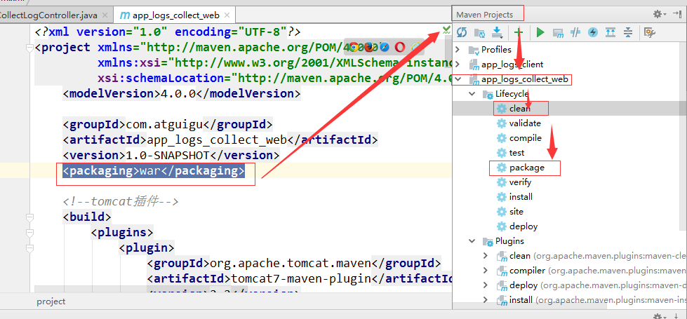
c)查找到war包，并修改名称为app_logs。
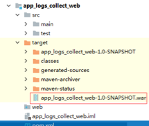 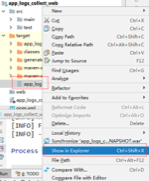
修改app_logs_collect_web-1.0-SNAPSHOT.war的名称为app_logs.war
（2）将app_logs.war导入到linux的/opt/module/tomcat/webapps路径下
（3）启动Tomcat
[atguigu@hadoop102
bin]$ pwd
/opt/module/tomcat/bin
[atguigu@hadoop102 bin]$
./startup.sh
5.2.5 测试
修改app_logs_client工程中的UploadUtil中的请求地址为
|
URL url = new URL("http://hadoop102:8080/app_logs/coll/index");//
生产地址
|
执行日志生成程序，观察能否正确收到响应码200，否则需要进一步调试。
5.3 Flume模块
5.3.1 配置Hadoop集群
1）配置Hadoop集群，详见：RT大数据技术之Hadoop（入门）.doc文档
2）启动hadoop集群
[atguigu@hadoop102 hadoop-2.7.2]$
sbin/start-dfs.sh
[atguigu@hadoop103 hadoop-2.7.2]$
sbin/start-yarn.sh
5.3.2 Flume安装
1）将apache-flume-1.7.0-bin.tar.gz导入到Linux系统中/opt/sotfware目录下
2）解压apache-flume-1.7.0-bin.tar.gz到/opt/module目录下
[atguigu@hadoop102 software]$ tar -zxvf
apache-flume-1.7.0-bin.tar.gz -C /opt/module/
3）修改apache-flume-1.7.0-bin名称为flume
[atguigu@hadoop102 module]$ mv
apache-flume-1.7.0-bin/ flume
4）配置flume环境变量
[root@hadoop102
flume]# vi /etc/profile
#FLUME_HOME
export
FLUME_HOME=/opt/module/flume
export
PATH=$PATH:$FLUME_HOME/bin
[root@hadoop102
flume]# source /etc/profile
5）验证Flume环境变量配置
[root@hadoop102
flume]# flume-ng version
Flume 1.7.0
5.3.3 创建Flume拦截器
1）创建拦截器主要目的是区分kafka传递过来的日志类型。
2）自定义拦截器实操
（1）创建Java工程app_logs_flume
（2）添加maven支持，并导入pom文件，并刷新一下maven
|
<?xml
version="1.0" encoding="UTF-8"?>
<project
xmlns="http://maven.apache.org/POM/4.0.0"
xmlns:xsi="http://www.w3.org/2001/XMLSchema-instance"
xsi:schemaLocation="http://maven.apache.org/POM/4.0.0
http://maven.apache.org/xsd/maven-4.0.0.xsd">
<modelVersion>4.0.0</modelVersion>
<groupId>com.atguigu</groupId>
<artifactId>app_logs_flume</artifactId>
<version>1.0-SNAPSHOT</version>
<dependencies>
<dependency>
<groupId>org.apache.flume</groupId>
<artifactId>flume-ng-core</artifactId>
<version>1.7.0</version>
</dependency>
</dependencies>
</project>
|
（2）代码实现
a)创建包名：com.atguigu.app.flume.interceptor
b)根据系统时间拦截器自定义拦截器：Ctrl+shift+t，输入TimestampInterceptor，将系统时间拦截器中代码拷贝过来，替换TimestampInterceptor的名称为LogCollInterceptor。
c)编写连接器业务代码
|
package com.atguigu.app.flume.interceptor;
import org.apache.flume.Context;
import org.apache.flume.Event;
import org.apache.flume.interceptor.Interceptor;
import java.util.List;
import java.util.Map;
import static org.apache.flume.interceptor.TimestampInterceptor.Constants.*;
/**
* 自定义flume的拦截器,提取body中的日志类型作为header
*/
public class LogCollInterceptor
implements Interceptor {
private final boolean
preserveExisting;
private LogCollInterceptor(boolean
preserveExisting) {
this.preserveExisting
= preserveExisting;
}
public void initialize() {
}
/**
* Modifies events in-place.
*/
public Event
intercept(Event event) {
// 1获取flume接收消息头
Map<String,
String> headers = event.getHeaders();
// 2获取flume接收的json数据数组
byte[] json = event.getBody();
// 将json数组转换为字符串
String
jsonStr = new String(json);
// pageLog
String logType = ""
;
if(jsonStr.contains("pageId")){
logType = "page"
;
}
// eventLog
else if (jsonStr.contains("eventId"))
{
logType = "event";
}
// usageLog
else if (jsonStr.contains("singleUseDurationSecs"))
{
logType = "usage";
}
// error
else if (jsonStr.contains("errorBrief"))
{
logType = "error";
}
// startup
else if (jsonStr.contains("network"))
{
logType = "startup";
}
// 3将日志类型存储到flume头中
headers.put("logType",
logType);
return event;
}
/**
* Delegates to {@link #intercept(Event)}
in a loop.
* @param events
* @return
*/
public List<Event>
intercept(List<Event> events) {
for (Event event :
events) {
intercept(event);
}
return events;
}
public void close() {
}
public static class Builder
implements Interceptor.Builder {
private boolean
preserveExisting = PRESERVE_DFLT;
public Interceptor
build() {
return new LogCollInterceptor(preserveExisting);
}
public void configure(Context
context) {
preserveExisting =
context.getBoolean(PRESERVE, PRESERVE_DFLT);
}
}
public static class Constants
{
public static String TIMESTAMP
= "timestamp";
public static String PRESERVE
= "preserveExisting";
public static boolean PRESERVE_DFLT
= false;
}
}
|
（3）打成jar包，修改jar包名称为app_logs_flume.jar，然后将该jar包导入linux虚拟机/opt/module/flume/lib目录下。
5.3.4 配置Flume
1）配置需求：实现消费kafka的5个主题，并把数据导入到HDFS文件系统。
2）配置实现：
[atguigu@hadoop102 conf]$ pwd
/opt/module/flume/conf
[atguigu@hadoop102 conf]$ cp
flume-conf.properties.template flume-conf.properties
[atguigu@hadoop102 conf]$ vi
flume-conf.properties
打开文件的末尾追加以下内容
|
a1.sources=r1
a1.channels=c1
a1.sinks=k1
a1.sources.r1.interceptors
= i1
a1.sources.r1.interceptors.i1.type
= com.atguigu.app.flume.interceptor.LogCollInterceptor$Builder
a1.sources.r1.type =
org.apache.flume.source.kafka.KafkaSource
a1.sources.r1.batchSize = 5000
a1.sources.r1.batchDurationMillis = 2000
a1.sources.r1.kafka.bootstrap.servers =
hadoop102:9092
a1.sources.r1.kafka.zookeeperConnect =
hadoop102:2181,hadoop103:2181,hadoop104:2181
a1.sources.r1.kafka.topics=topic_app_startup,topic_app_error,topic_app_event,topic_app_usage,topic_app_page
a1.channels.c1.type=memory
a1.channels.c1.capacity=100000
a1.channels.c1.transactionCapacity=10000
a1.sinks.k1.type = hdfs
a1.sinks.k1.hdfs.path = /user/centos/applogs/%{logType}/%Y%m/%d/%H%M
a1.sinks.k1.hdfs.filePrefix = events-
a1.sinks.k1.hdfs.round = true
a1.sinks.k1.hdfs.roundValue = 30
a1.sinks.k1.hdfs.roundUnit = second
#不要产生大量小文件
a1.sinks.k1.hdfs.rollInterval = 30
a1.sinks.k1.hdfs.rollSize = 0
a1.sinks.k1.hdfs.rollCount = 0
#控制输出文件是原生文件。
a1.sinks.k1.hdfs.fileType = DataStream
a1.sources.r1.channels = c1
a1.sinks.k1.channel= c1
|
2）启动flume
[atguigu@hadoop102
conf]$ pwd
/opt/module/flume/conf
[atguigu@hadoop102 conf]$ flume-ng agent -f
flume-conf.properties -n a1
5.3.5 测试
1）启动日志生成程序
2）查看HDFS的/user/centos/applogs路径上是否有数据收到。
六 数据处理模块框架搭建
6.1 数据处理模块集群部署规划
|
Hadoop102主机
|
Hadoop103主机
|
Hadoop104主机
|
|
|
Hive1.2.1
|
|
|
Mysql 5.6.24
|
|
|
6.2 配置Hive元数据存储到mysql
具体安装配置，详见：RT大数据技术之Hive.doc文档
6.3 配置Hive支持JSON存储
在Hive中采用Json作为存储格式，需要建表时指定Serde。Insert into时，Hive使用json格式进行保存，查询时，通过json库进行解析。Hive默认输出是压缩格式，这里改成不压缩。
1）实操
（1）将json-serde-1.3.8-jar-with-dependencies.jar导入到hive的/opt/module/hive/lib路径下。
（2）在/opt/module/hive/conf/hive-site.xml文件中添加如下配置
|
<property>
<name>hive.aux.jars.path</name>
<value>file:///opt/module/hive/lib/json-serde-1.3.8-jar-with-dependencies.jar</value>
</property>
<property>
<name>hive.exec.compress.output</name>
<value>false</value>
</property>
|
6.4 创建数据库及分区表
0）启动hive
[atguigu@hadoop103 hive]$ bin/hive
查看数据库
hive (default)> show databases;
如果applogs_db存在则删除数据库
hive (default)> drop database applogs_db;
1）创建数据库
hive (default)> create database applogsdb ;
使用applogsdb数据库
hive (default)> use applogsdb;
2）创建分区表
|
--startup
CREATE external
TABLE ext_startup_logs(createdAtMs
bigint,appId string,tenantId string,deviceId string,appVersion
string,appChannel string,appPlatform string,osType string,deviceStyle
string,country string,province string,ipAddress string,network string,carrier
string,brand string,screenSize string)PARTITIONED BY (ym string, day
string,hm string) ROW FORMAT SERDE 'org.openx.data.jsonserde.JsonSerDe'
STORED AS TEXTFILE;
--error
CREATE external
TABLE ext_error_logs(createdAtMs bigint,appId
string,tenantId string,deviceId string,appVersion string,appChannel
string,appPlatform string,osType string,deviceStyle string,errorBrief
string,errorDetail string)PARTITIONED BY (ym string, day string,hm string)
ROW FORMAT SERDE 'org.openx.data.jsonserde.JsonSerDe' STORED AS TEXTFILE;
--event
CREATE external
TABLE ext_event_logs(createdAtMs bigint,appId
string,tenantId string,deviceId string,appVersion string,appChannel
string,appPlatform string,osType string,deviceStyle string,eventId
string,eventDurationSecs bigint,paramKeyValueMap
Map<string,string>)PARTITIONED BY (ym string, day string,hm string) ROW
FORMAT SERDE 'org.openx.data.jsonserde.JsonSerDe' STORED AS TEXTFILE;
--page
CREATE external
TABLE ext_page_logs(createdAtMs bigint,appId
string,tenantId string,deviceId string,appVersion string,appChannel
string,appPlatform string,osType string,deviceStyle
string,pageViewCntInSession int,pageId string,visitIndex int,nextPage
string,stayDurationSecs bigint)PARTITIONED BY (ym string, day string,hm
string) ROW FORMAT SERDE 'org.openx.data.jsonserde.JsonSerDe' STORED AS
TEXTFILE;
--usage
CREATE external
TABLE ext_usage_logs(createdAtMs bigint,appId
string,tenantId string,deviceId string,appVersion string,appChannel
string,appPlatform string,osType string,deviceStyle string,singleUseDurationSecs
bigint,singleUploadTraffic bigint,singleDownloadTraffic bigint)PARTITIONED BY
(ym string, day string,hm string) ROW FORMAT SERDE
'org.openx.data.jsonserde.JsonSerDe' STORED AS TEXTFILE;
|
3）查看数据库中的分区表
hive (applogsdb)>
show tables;
tab_name
ext_error_logs
ext_event_logs
ext_page_logs
ext_startup_logs
ext_usage_logs
4）退出hive
hive (applogsdb)> quit;
6.5 编写Hive执行脚本
0）需求：实现每隔一分钟将HDFS上的数据，导入到Hive对应分区中一次。
1）Date命令
（1）明天
[atguigu@hadoop103
shell]$ date -d "1 day" +%Y%m%d
20171107
（2）昨天
[atguigu@hadoop103
shell]$ date -d "-1 day" +%Y%m%d
20171105
（3）上一个月
[atguigu@hadoop103
shell]$ date -d "-1 month" +%Y%m%d
20171006
（4）前三分钟
[atguigu@hadoop103
shell]$ date -d "-3 minute" +%Y%m-%d-%H%M
201711-06-1130
（5）用“-”分割，截取出第一个参数
[atguigu@hadoop103
shell]$ date -d "-3 minute" +%Y%m-%d-%H%M | awk -F '-' '{print $1}'
201711
（6）用“-”分割，截取出第二个参数
[atguigu@hadoop103 shell]$ date -d "-3
minute" +%Y%m-%d-%H%M | awk -F
'-' '{print $2}'
06
（7）用“-”分割，截取出第三个参数
[atguigu@hadoop103 shell]$ date -d "-3
minute" +%Y%m-%d-%H%M | awk -F
'-' '{print $3}'
1131
2）在/opt/module/shell目录下编写shell脚本（hdfstohive.sh）
（1）创建文件夹：
[atguigu@hadoop103 module]$ mkdir
shell
（2）创建脚本hdfstohive.sh
[atguigu@hadoop103 shell]$ touch
hdfstohive.sh
|
#!/bin/bash
systime=`date -d "-3 minute"
+%Y%m-%d-%H%M`
ym=`echo ${systime} | awk -F '-' '{print
$1}'`
day=`echo ${systime} | awk -F '-' '{print
$2}'`
hm=`echo ${systime} | awk -F '-' '{print
$3}'`
#执行hive的命令
hive -e "load data inpath
'/user/centos/applogs/startup/${ym}/${day}/${hm}' into table
applogsdb.ext_startup_logs
partition(ym='${ym}',day='${day}',hm='${hm}')"
hive -e "load data inpath
'/user/centos/applogs/error/${ym}/${day}/${hm}' into table
applogsdb.ext_error_logs partition(ym='${ym}',day='${day}',hm='${hm}')"
hive -e "load data inpath
'/user/centos/applogs/event/${ym}/${day}/${hm}' into table
applogsdb.ext_event_logs partition(ym='${ym}',day='${day}',hm='${hm}')"
hive -e "load data inpath
'/user/centos/applogs/usage/${ym}/${day}/${hm}' into table applogsdb.ext_usage_logs
partition(ym='${ym}',day='${day}',hm='${hm}')"
hive -e "load data inpath
'/user/centos/applogs/page/${ym}/${day}/${hm}' into table
applogsdb.ext_page_logs partition(ym='${ym}',day='${day}',hm='${hm}')"
|
（3）修改脚本hdfstohive.sh权限
[atguigu@hadoop103 shell]$ chmod
777 hdfstohive.sh
（4）必须保证hive的环境变量已经配置
[root@hadoop103 shell]# vi
/etc/profile
#HIVE_HOME
export
HIVE_HOME=/opt/module/hive
export
PATH=$PATH:$HIVE_HOME/bin
[root@hadoop103
shell]# source /etc/profile
（5）执行一下hive脚本
[atguigu@hadoop103 shell]$
./hdfstohive.sh
6.6 编写Linux调度crondtab
1）crontab常用命令
（1）查看状态：
service crond status
（2）停止状态：
service crond stop
（3）启动状态：
service crond start
（4）编辑crontab定时任务
crontab -e
（5）查询crontab任务
crontab -l
（6）删除当前用户所有的crontab任务
crontab -r
2）编写crontab调度
1）进入编写crontab调度
[atguigu@hadoop103 shell]$ crontab
-e
2）实现每分钟执行一次
|
*/30 * * * * source
/etc/profile; /opt/module/shell/hdfstohive.sh
|
|
项目
|
含义
|
范围
|
|
第一个“*”
|
一小时当中的第几分钟
|
0-59
|
|
第二个“*”
|
一天当中的第几小时
|
0-23
|
|
第三个“*”
|
一个月当中的第几天
|
1-31
|
|
第四个“*”
|
一年当中的第几月
|
1-12
|
|
第五个“*”
|
一周当中的星期几
|
0-7（0和7都代表星期日）
|
3）查看crontab
[atguigu@hadoop103
shell]$ crontab -l
*/30 * * * * source /etc/profile;
/opt/module/shell/hdfstohive.sh
6.7 测试
1）启动日志生成程序
2）等待三分钟后，检查HDFS的/user/hive/warehouse/applogsdb.db路径是否有新数据产生。
3）查询所有启动日志信息
[atguigu@hadoop103 shell]$ hive
hive (default)> use applogsdb;
hive (applogsdb)> select * from
ext_startup_logs;
4）查询指定app的用户数
hive (applogsdb)> select count(distinct
deviceid) from ext_startup_logs where appid='sdk34734';
5）统计新增用户
需要自定义UDF函数
七 业务需求处理
7.1 自定义UDF函数
0）需求：
根据输入的时间信息，返回当天的起始时间；
根据输入的时间信息，返回本周的起始时间；
根据输入的时间信息，返回本月的起始时间；
根据输入的时间和时间格式化信息，返回按照格式化要求显示的信息。
1）编写获取日期开始时间、周开始时间、和月开始时间的工具类
|
package com.atguigu.hive;
import java.text.SimpleDateFormat;
import java.util.Calendar;
import java.util.Date;
public class DateUtil {
/**
* 得到指定date的零时刻.
*/
public
static Date getDayBeginTime(Date d) {
try {
SimpleDateFormat sdf = new
SimpleDateFormat("yyyy/MM/dd 00:00:00");
return sdf.parse(sdf.format(d));
} catch (Exception e) {
e.printStackTrace();
}
return null;
}
/**
* 得到指定date的偏移量零时刻.
*/
public
static Date getDayBeginTime(Date d, int offset)
{
try {
SimpleDateFormat sdf = new
SimpleDateFormat("yyyy/MM/dd 00:00:00");
Date beginDate =
sdf.parse(sdf.format(d));
Calendar c = Calendar.getInstance();
c.setTime(beginDate);
c.add(Calendar.DAY_OF_MONTH,
offset);
return c.getTime();
} catch (Exception e) {
e.printStackTrace();
}
return null;
}
/**
* 得到指定date所在周的起始时刻.
*/
public
static Date getWeekBeginTime(Date d) {
try {
//得到d的零时刻
Date beginDate = getDayBeginTime(d);
Calendar c = Calendar.getInstance();
c.setTime(beginDate);
int n = c.get(Calendar.DAY_OF_WEEK);
c.add(Calendar.DAY_OF_MONTH,
-(n - 1));
return c.getTime();
} catch (Exception e) {
e.printStackTrace();
}
return null;
}
/**
* 得到指定date所在周的起始时刻.
*/
public
static Date getWeekBeginTime(Date d, int offset)
{
try {
//得到d的零时刻
Date beginDate = getDayBeginTime(d);
Calendar c = Calendar.getInstance();
c.setTime(beginDate);
int n =
c.get(Calendar.DAY_OF_WEEK);
//定位到本周第一天
c.add(Calendar.DAY_OF_MONTH, -(n - 1));
c.add(Calendar.DAY_OF_MONTH,
offset * 7);
return c.getTime();
} catch (Exception e) {
e.printStackTrace();
}
return null;
}
/**
* 得到指定date所在月的起始时刻.
*/
public
static Date getMonthBeginTime(Date d) {
try {
//得到d的零时刻
Date beginDate = getDayBeginTime(d);
SimpleDateFormat sdf = new
SimpleDateFormat("yyyy/MM/01 00:00:00");
return sdf.parse(sdf.format(beginDate));
} catch (Exception e) {
e.printStackTrace();
}
return null;
}
/**
* 得到指定date所在月的起始时刻.
*/
public
static Date getMonthBeginTime(Date d, int offset)
{
try {
//得到d的零时刻
Date beginDate = getDayBeginTime(d);
SimpleDateFormat sdf = new
SimpleDateFormat("yyyy/MM/01 00:00:00");
//d所在月的第一天的零时刻
Date
firstDay = sdf.parse(sdf.format(beginDate));
Calendar c = Calendar.getInstance();
c.setTime(firstDay);
//对月进行滚动
c.add(Calendar.MONTH, offset);
return c.getTime();
} catch (Exception e) {
e.printStackTrace();
}
return null;
}
}
|
2）编写DayBeginUDF、WeekBeginUDF、MonthBeginUDF、FormatTimeUDF函数
（1）创建java工程导入pom.xml文件
创建jar工程：app_logs_hive
添加maven框架支持，并导入pom文件，并刷新一下maven
|
<?xml
version="1.0" encoding="UTF-8"?>
<project
xmlns="http://maven.apache.org/POM/4.0.0"
xmlns:xsi="http://www.w3.org/2001/XMLSchema-instance"
xsi:schemaLocation="http://maven.apache.org/POM/4.0.0
http://maven.apache.org/xsd/maven-4.0.0.xsd">
<modelVersion>4.0.0</modelVersion>
<groupId>com.atguigu</groupId>
<artifactId>app_logs_hive</artifactId>
<version>1.0-SNAPSHOT</version>
<dependencies>
<dependency>
<groupId>junit</groupId>
<artifactId>junit</artifactId>
<version>4.12</version>
</dependency>
<dependency>
<groupId>org.apache.hive</groupId>
<artifactId>hive-exec</artifactId>
<version>1.2.1</version>
</dependency>
</dependencies>
</project>
|
（2）编写DayBeginUDF
创建包名：com.atguigu.hive
编写代码：
|
package com.atguigu.hive;
import org.apache.hadoop.hive.ql.exec.UDF;
import java.text.ParseException;
import java.text.SimpleDateFormat;
import java.util.Date;
/**
* 计算day起始毫秒数
*/
public class DayBeginUDF
extends UDF {
// 计算现在的起始时刻(毫秒数)
public
long evaluate() throws ParseException {
return evaluate(new Date());
}
// 指定天偏移量
public
long evaluate(int offset) throws ParseException
{
return evaluate(DateUtil.getDayBeginTime(new
Date(), offset));
}
// 计算某天的起始时刻，日期类型(毫秒数)
public
long evaluate(Date d) throws ParseException
{
return DateUtil.getDayBeginTime(d).getTime();
}
// 计算某天的起始时刻，日期类型，带偏移量(毫秒数)
public
long evaluate(Date d, int offset) throws
ParseException {
return DateUtil.getDayBeginTime(d,
offset).getTime();
}
// 计算某天的起始时刻，String类型(毫秒数)
public
long evaluate(String dateStr) throws ParseException
{
SimpleDateFormat sdf = new SimpleDateFormat("yyyy/MM/dd
HH:mm:ss");
Date d = sdf.parse(dateStr);
return evaluate(d);
}
// 计算某天的起始时刻，String类型，带偏移量(毫秒数)
public
long evaluate(String dateStr, int offset) throws
ParseException {
SimpleDateFormat sdf = new SimpleDateFormat("yyyy/MM/dd
HH:mm:ss");
Date d = sdf.parse(dateStr);
return DateUtil.getDayBeginTime(d,
offset).getTime();
}
// 计算某天的起始时刻，String类型，带格式化要求(毫秒数)
public
long evaluate(String dateStr, String fmt) throws
ParseException {
SimpleDateFormat sdf = new SimpleDateFormat(fmt);
Date d = sdf.parse(dateStr);
return DateUtil.getDayBeginTime(d).getTime();
}
// 计算某天的起始时刻，String类型，带格式化，带偏移量(毫秒数)
public
long evaluate(String dateStr, String fmt, int offset)
throws ParseException {
SimpleDateFormat sdf = new SimpleDateFormat(fmt);
Date d = sdf.parse(dateStr);
return DateUtil.getDayBeginTime(d,
offset).getTime();
}
}
|
（3）编写WeekBeginUDF
|
package com.atguigu.hive;
import org.apache.hadoop.hive.ql.exec.UDF;
import java.text.ParseException;
import java.text.SimpleDateFormat;
import java.util.Date;
/**
* Created by atguigu on 2017/11/9
*/
public class WeekBeginUDF extends UDF {
// 计算本周的起始时间，(毫秒数)
public
long evaluate() throws ParseException {
return DateUtil.getWeekBeginTime(new
Date()).getTime() ;
}
// 指定周偏移量
public
long evaluate(int offset) throws ParseException
{
return DateUtil.getWeekBeginTime(new
Date(),offset).getTime();
}
// 计算某周的起始时刻，日期类型(毫秒数)
public
long evaluate(Date d) throws ParseException
{
return DateUtil.getWeekBeginTime(d).getTime();
}
// 计算某周的起始时刻，日期类型，带偏移量(毫秒数)
public
long evaluate(Date d,int offset) throws
ParseException {
return DateUtil.getWeekBeginTime(d,offset).getTime();
}
// 计算某周的起始时刻，String类型(毫秒数)
public
long evaluate(String dateStr) throws ParseException
{
SimpleDateFormat sdf = new SimpleDateFormat("yyyy/MM/dd
HH:mm:ss");
Date d = sdf.parse(dateStr);
return DateUtil.getWeekBeginTime(d).getTime();
}
// 计算某周的起始时刻，String类型，带偏移量(毫秒数)
public
long evaluate(String dateStr,int offset) throws
ParseException {
SimpleDateFormat sdf = new SimpleDateFormat("yyyy/MM/dd
HH:mm:ss");
Date d = sdf.parse(dateStr);
return DateUtil.getWeekBeginTime(d,
offset).getTime();
}
// 计算某周的起始时刻，String类型，带格式化要求(毫秒数)
public
long evaluate(String dateStr, String fmt) throws
ParseException {
SimpleDateFormat sdf = new SimpleDateFormat(fmt);
Date d = sdf.parse(dateStr);
return DateUtil.getWeekBeginTime(d).getTime();
}
// 计算某周的起始时刻，String类型，带格式化，带偏移量(毫秒数)
public
long evaluate(String dateStr, String fmt,int offset)
throws ParseException {
SimpleDateFormat sdf = new SimpleDateFormat(fmt);
Date d = sdf.parse(dateStr);
return DateUtil.getWeekBeginTime(d,
offset).getTime();
}
}
|
（4）编写MonthBeginUDF
|
package com.atguigu.hive;
import org.apache.hadoop.hive.ql.exec.UDF;
import java.text.ParseException;
import java.text.SimpleDateFormat;
import java.util.Date;
/**
* Created by atguigu on 2017/11/9
*/
public class MonthBeginUDF extends UDF {
// 计算本月的起始时刻(毫秒数)
public
long evaluate() throws ParseException {
return DateUtil.getMonthBeginTime(new
Date()).getTime() ;
}
// 指定月偏移量
public
long evaluate(int offset) throws ParseException
{
return DateUtil.getMonthBeginTime(new
Date(),offset).getTime();
}
// 计算某月的起始时刻，日期类型(毫秒数)
public
long evaluate(Date d) throws ParseException
{
return DateUtil.getMonthBeginTime(d).getTime();
}
// 计算某月的起始时刻，日期类型，带偏移量(毫秒数)
public
long evaluate(Date d,int offset) throws
ParseException {
return DateUtil.getMonthBeginTime(d,offset).getTime();
}
// 计算某月的起始时刻，String类型(毫秒数)
public
long evaluate(String dateStr) throws ParseException
{
SimpleDateFormat sdf = new SimpleDateFormat("yyyy/MM/dd
HH:mm:ss");
Date d = sdf.parse(dateStr);
return DateUtil.getMonthBeginTime(d).getTime();
}
// 计算某月的起始时刻，String类型，带偏移量(毫秒数)
public
long evaluate(String dateStr,int offset) throws
ParseException {
SimpleDateFormat sdf = new SimpleDateFormat("yyyy/MM/dd
HH:mm:ss");
Date d = sdf.parse(dateStr);
return DateUtil.getMonthBeginTime(d,
offset).getTime();
}
// 计算某月的起始时刻，String类型，带格式化要求(毫秒数)
public
long evaluate(String dateStr, String fmt) throws
ParseException {
SimpleDateFormat sdf = new SimpleDateFormat(fmt);
Date d = sdf.parse(dateStr);
return DateUtil.getMonthBeginTime(d).getTime();
}
// 计算某月的起始时刻，String类型，带格式化，带偏移量(毫秒数)
public
long evaluate(String dateStr, String fmt,int offset)
throws ParseException {
SimpleDateFormat sdf = new SimpleDateFormat(fmt);
Date d = sdf.parse(dateStr);
return DateUtil.getMonthBeginTime(d,
offset).getTime();
}
}
|
（5）编写FormatTimeUDF
|
package com.atguigu.hive;
import org.apache.hadoop.hive.ql.exec.UDF;
import java.text.ParseException;
import java.text.SimpleDateFormat;
import java.util.Date;
/**
* Created by atguigu on 2017/11/9
*/
public class FormatTimeUDF extends UDF{
// 根据输入的时间毫秒值（long类型）和格式化要求，返回String类型时间
public
String evaluate(long ms,String fmt) throws
ParseException {
SimpleDateFormat sdf = new SimpleDateFormat(fmt)
;
Date d = new Date();
d.setTime(ms);
return sdf.format(d) ;
}
// 根据输入的时间毫秒值（String类型）和格式化要求，返回String类型时间
public
String evaluate(String ms,String fmt) throws ParseException
{
SimpleDateFormat sdf = new SimpleDateFormat(fmt)
;
Date d = new Date();
d.setTime(Long.parseLong(ms));
return sdf.format(d) ;
}
// 根据输入的时间毫秒值（long类型）、格式化要求，和区分周的任意值，返回String类型时间
public
String evaluate(long ms ,String fmt , int
week) throws ParseException {
Date d = new Date();
d.setTime(ms);
//周内第一天
Date
firstDay = DateUtil.getWeekBeginTime(d) ;
SimpleDateFormat sdf = new SimpleDateFormat(fmt)
;
return sdf.format(firstDay)
;
}
}
|
3）导出jar包（app_logs_hive.jar）
4）添加app_logs_hive.jar到类路径/opt/module/hive/lib下
（1）临时添加jar包：
hive (applogsdb)> add jar
/opt/module/hive/lib/app_logs_hive.jar;
（2）永久添加jar包：
在hive-site.xml文件中添加
|
<property>
<name>hive.aux.jars.path</name>
<value>file:///opt/module/hive/lib/app_logs_hive.jar</value>
</property>
|
由于之前添加过json的jar包所以修改为如下方式
|
<property>
<name>hive.aux.jars.path</name>
<value>file:///opt/module/hive/lib/json-serde-1.3.8-jar-with-dependencies.jar,file:///opt/module/hive/lib/app_logs_hive.jar</value>
</property>
|
5）注册永久函数
hive (default)>create function getdaybegin AS 'com.atguigu.hive.DayBeginUDF';
hive (default)>create function getweekbegin AS 'com.atguigu.hive.WeekBeginUDF';
hive (default)>create function getmonthbegin AS 'com.atguigu.hive.MonthBeginUDF';
hive (default)>create function formattime AS 'com.atguigu.hive.FormatTimeUDF';
6）验证函数
登录mysql
[atguigu@hadoop102 ~]$ mysql -uroot -p000000
mysql> show databases;
mysql> use metastore;
mysql> show tables;
mysql> select * from FUNCS;
7）删除函数
hive (applogsdb)> drop function getdaybegin;
hive (applogsdb)> drop function
getweekbegin;
hive (applogsdb)> drop function
getmonthbegin;
hive (applogsdb)> drop function formattime;
8）注意：在哪个数据库中注册的永久函数，必须在哪个数据库下将该方法删除
比如在applogsdb数据库中创建的方法，必须在该数据中调用drop方法才能实现删除功能。
7.2 新增用户统计
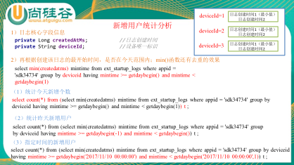
7.2.1 任意日新增用户
1）今天新增用户
（1）判断今天新增用户条件：
先按照设备id分组；
再根据创建该日志的最开始时间，是否在今天范围内。
（2）统计今天新增个数
|
select
count(*)
from
(select min(createdatms) mintime
from ext_startup_logs
where appid = 'sdk34734'
group by deviceid
having mintime
>= getdaybegin() and mintime < getdaybegin(1)
)t ;
|
2）昨天新增用户
|
select
count(*)
from
(select min(createdatms) mintime
from ext_startup_logs
where appid = 'sdk34734'
group by deviceid
having mintime
>= getdaybegin(-1) and mintime < getdaybegin()
)t ;
|
3）指定时间的新增用户
|
select
count(*)
from
(select min(createdatms) mintime
from ext_startup_logs
where appid = 'sdk34734'
group by deviceid
having mintime >=
getdaybegin('2017/11/10 00:00:00') and mintime < getdaybegin('2017/11/10
00:00:00',1)
)t ;
|
7.2.2 任意周新增用户
1）本周新增用户
|
select
count(*)
from
(select min(createdatms) mintime
from ext_startup_logs
where appid = 'sdk34734'
group by deviceid
having mintime
>= getweekbegin() and mintime < getweekbegin(1)
) t ;
|
2）上一周新增用户
|
select
count(*)
from
(select min(createdatms) mintime
from ext_startup_logs
where appid = 'sdk34734'
group by deviceid
having mintime
>= getweekbegin(-1) and mintime < getweekbegin()
)t ;
|
3）指定周时间的新增用户
|
select
count(*)
from
(select min(createdatms) mintime
from ext_startup_logs
where appid = 'sdk34734'
group by deviceid
having mintime
>= getweekbegin('2017/10/10 00:00:00') and mintime <
getweekbegin('2017/10/10 00:00:00',1)
)t ;
|
7.2.3 月新增用户
|
select
count(*)
from
(select min(createdatms) mintime
from ext_startup_logs
where appid = 'sdk34734'
group by deviceid
having mintime
>= getmonthbegin() and mintime < getmonthbegin(1)
)t ;
|
7.3 活跃用户统计
7.3.1 日、周、月活跃用户
0）分析：
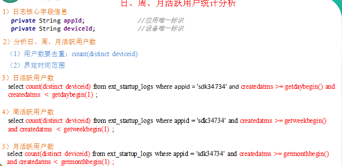
1）日活跃用户数
|
select
count(distinct deviceid)
from ext_startup_logs
where appid = 'sdk34734'
and createdatms
>= getdaybegin() and createdatms < getdaybegin(1);
|
2）周活跃用户数
|
select
count(distinct deviceid)
from ext_startup_logs
where appid = 'sdk34734'
and createdatms
>= getweekbegin() and createdatms < getweekbegin(1);
|
3）月活跃用户数
|
select
count(distinct deviceid)
from ext_startup_logs
where appid = 'sdk34734'
and createdatms
>= getmonthbegin() and createdatms < getmonthbegin(1);
|
7.3.2 指定时间内查询日活、周活、月活
0）分析
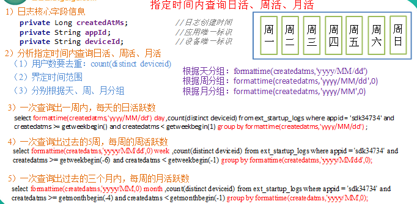
1）一次查询出一周内，每天的日活跃数
|
select
formattime(createdatms,'yyyy/MM/dd') day
,count(distinct deviceid)
from ext_startup_logs
where appid = 'sdk34734'
and createdatms
>= getweekbegin() and createdatms < getweekbegin(1)
group by formattime(createdatms,'yyyy/MM/dd');
|
2）一次查询出过去的5周，每周的周活跃数
|
select
formattime(createdatms,'yyyy/MM/dd',0)
week ,count(distinct deviceid)
from ext_startup_logs
where appid = 'sdk34734'
and createdatms
>= getweekbegin(-6) and createdatms < getweekbegin(-1)
group by
formattime(createdatms,'yyyy/MM/dd',0);
|
3）一次查询出过去的三个月内，每周的月活跃数
|
select
formattime(createdatms,'yyyy/MM',0) month
,count(distinct deviceid)
from ext_startup_logs
where appid = 'sdk34734'
and createdatms
>= getmonthbegin(-4) and createdatms < getmonthbegin(-1)
group by
formattime(createdatms,'yyyy/MM',0);
|
7.3.3 优化活跃数查询
根据时间分区表去查询，避免全表扫描
|
select
count(distinct deviceid)
from ext_startup_logs
where appid = 'sdk34734'
and ym = formattime(getdaybegin(),'yyyyMM')
and day = formattime(getdaybegin(),'dd');
|
7.3.4 过去五周周活跃用户数
过去的五周(包含本周)某个app每周的周活跃用户数
连接函数测试：select concat(ym,day)
from ext_startup_logs;
|
select
formattime(createdatms,'yyyyMMdd',0)
stdate, count(distinct deviceid) stcount
from ext_startup_logs
where concat(ym,day)
>= formattime(getweekbegin(-4),'yyyyMMdd') and appid ='sdk34734'
group by
formattime(createdatms,'yyyyMMdd',0);
|
7.3.5 过去六月活跃用户数
最近的六个月(包含本月)每月的月活跃数。
|
select
formattime(createdatms,'yyyyMM') stdate,
count(distinct deviceid) stcount
from ext_startup_logs
where ym >=
formattime(getmonthbegin(-5),'yyyyMM') and appid ='sdk34734'
group by
formattime(createdatms,'yyyyMM');
|
7.3.6 连续n周活跃用户统计
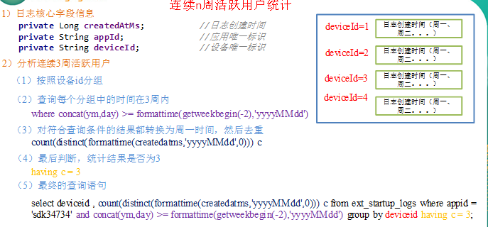
连续活跃3周
|
select deviceid ,
count(distinct(formattime(createdatms,'yyyyMMdd',0))) c
from ext_startup_logs
where appid = 'sdk34734'
and concat(ym,day)
>= formattime(getweekbegin(-2),'yyyyMMdd')
group by deviceid
having c = 3;
|
7.3.7 忠诚用户
忠诚用户（连续活跃5周）
|
select deviceid ,
count(distinct(formattime(createdatms,'yyyyMMdd',0))) c
from ext_startup_logs
where appid = 'sdk34734'
and concat(ym,day)
>= formattime(getweekbegin(-4),'yyyyMMdd')
group by deviceid
having c = 5;
|
7.4 沉默用户统计
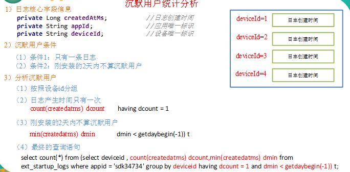
查询沉默用户数（一共只有一条日志；且安装时间超过2天）
|
select
count(*)
from
(select deviceid , count(createdatms)
dcount,min(createdatms) dmin
from ext_startup_logs
where appid = 'sdk34734'
group by deviceid
having dcount = 1
and dmin < getdaybegin(-1)
)t;
|
7.5 启动次数统计
今天app的启动次数
启动次数类似于活跃用户数，活跃用户数去重，启动次数不需要去重。
|
select
count(deviceid)
from ext_startup_logs
where appid = 'sdk34734'
and ym =
formattime(getdaybegin(),'yyyyMM') and day = formattime(getdaybegin(),'dd');
|
7.6 版本分布统计
1）今天appid为34734的不同版本的活跃用户数。
|
select
appversion,count(distinct deviceid)
from ext_startup_logs
where appid = 'sdk34734'
and ym =
formattime(getdaybegin(),'yyyyMM') and day = formattime(getdaybegin(),'dd')
group by appversion;
|
2）本周内每天各版本日活跃数
（1）本周内：where concat(ym,day) >= formattime(getweekbegin(),'yyyyMMdd')
（2）每天：group by formattime(createdatms,'yyyyMMdd')
（2）各个版本：group by appversion
（3）日活跃数：count(distinct deviceid)
|
select
formattime(createdatms,'yyyyMMdd'),appversion , count(distinct
deviceid)
from ext_startup_logs
where appid = 'sdk34734'
and concat(ym,day) >=
formattime(getweekbegin(),'yyyyMMdd')
group by formattime(createdatms,'yyyyMMdd'),
appversion;
|
7.7 留存分析统计
7.7.1 本周回流用户统计
本周回流用户：上周没有启动过，本周启动过。
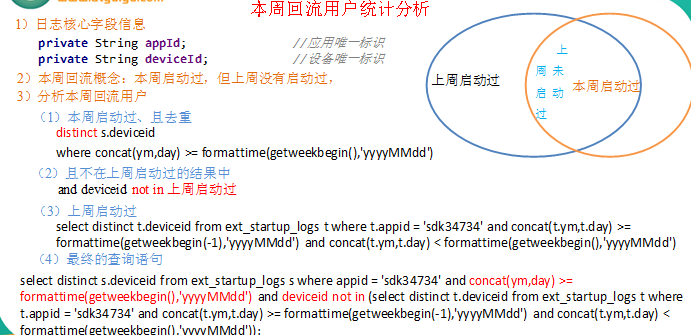
增加不是本周新增用户
|
select
distinct s.deviceid
from ext_startup_logs s
where appid = 'sdk34734' and
concat(ym,day) >= formattime(getweekbegin(),'yyyyMMdd') and deviceid not in (
select
distinct t.deviceid
from
ext_startup_logs t
where t.appid =
'sdk34734' and concat(t.ym,t.day) >=
formattime(getweekbegin(-1),'yyyyMMdd') and concat(t.ym,t.day) <
formattime(getweekbegin(),'yyyyMMdd')
);
|
7.7.2 连续n周没有启动的用户
连续2周内没有启动过：本周和上周没启动过；大上周之前启动过
|
select
distinct s.deviceid
from ext_startup_logs s
where appid='sdk34734'
and concat(ym,day) <
formattime(getweekbegin(),'yyyyMMdd')
and deviceid
not in (
select
distinct(t.deviceid)
from
ext_startup_logs t
where
t.appid='sdk34734'
and
concat(t.ym,t.day) >= formattime(getweekbegin(-1),'yyyyMMdd')
);
|
7.7.3 留存用户统计
本周留存用户=上周新增用户和本周活跃用户的交集
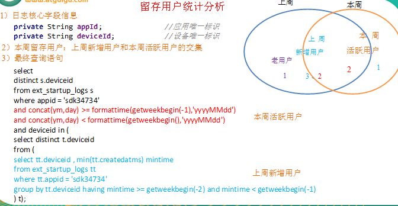
|
select
distinct s.deviceid
from ext_startup_logs s
where appid = 'sdk34734'
and concat(ym,day)
>= formattime(getweekbegin(-1),'yyyyMMdd')
and concat(ym,day) <
formattime(getweekbegin(),'yyyyMMdd')
and deviceid in (
select distinct
t.deviceid
from (
select tt.deviceid
, min(tt.createdatms) mintime
from
ext_startup_logs tt
where tt.appid =
'sdk34734'
group by
tt.deviceid having mintime >= getweekbegin(-2) and mintime <
getweekbegin(-1)
) t);
|
7.8 新鲜度分析
用户新鲜度 = 某段时间的新增用户数/某段时间的活跃的用户数 .
1）今天新增用户（为n）
|
select
count(*)
from
(select min(createdatms) mintime
from ext_startup_logs
where appid = 'sdk34734'
group by deviceid
having mintime >= getdaybegin() and
mintime < getdaybegin(1)
)t;
|
2）今天活跃用户（m）
|
select
count(distinct deviceid)
from ext_startup_logs
where appid = 'sdk34734'
and createdatms >= getdaybegin() and
createdatms < getdaybegin(1);
|
3）新鲜度 = n / m
注意判断m等于0的情况。
八 数据展示模块
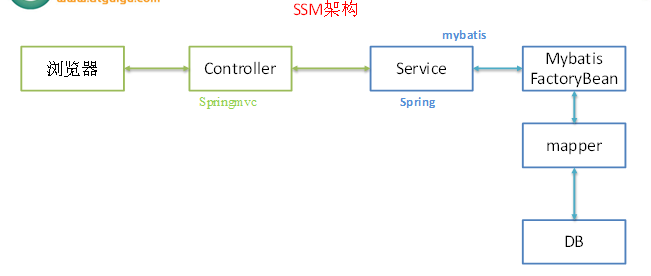
8.1 创建web可视化工程
8.1.1 创建web工程导入pom.xml
1）创建一个web工程：app_logs_visualize_web
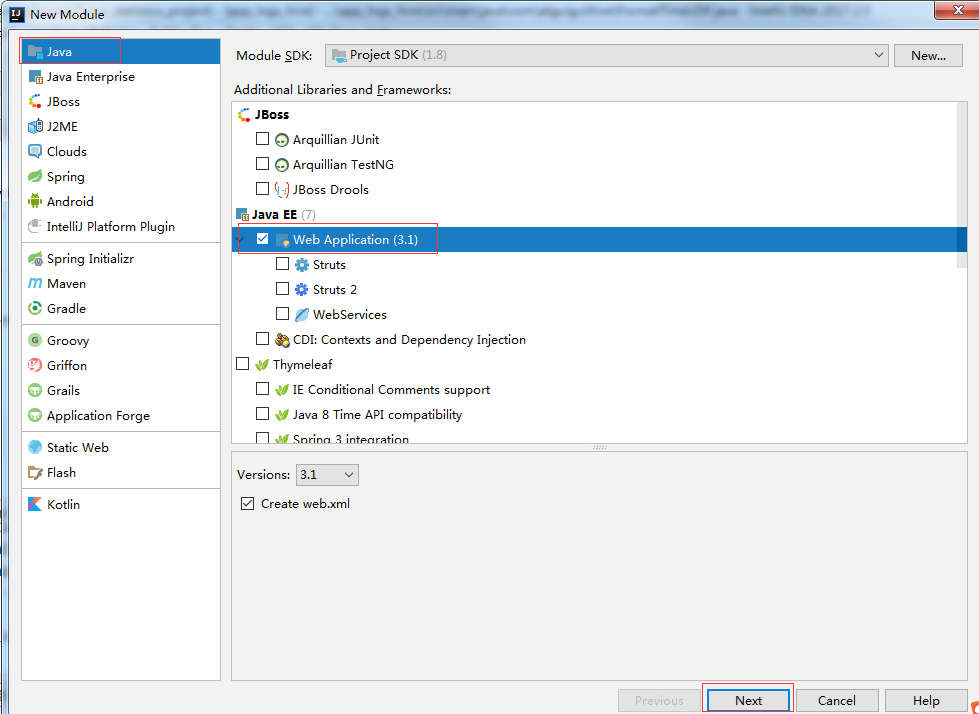
2）添加maven框架支持
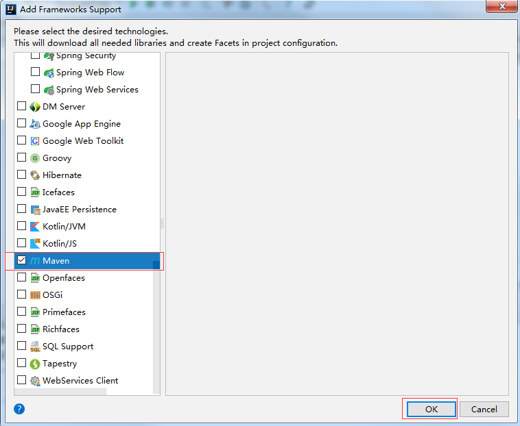
3）导入pom文件
|
<?xml
version="1.0" encoding="UTF-8"?>
<project
xmlns="http://maven.apache.org/POM/4.0.0"
xmlns:xsi="http://www.w3.org/2001/XMLSchema-instance"
xsi:schemaLocation="http://maven.apache.org/POM/4.0.0
http://maven.apache.org/xsd/maven-4.0.0.xsd">
<modelVersion>4.0.0</modelVersion>
<groupId>com.atguigu</groupId>
<artifactId>app_logs_visualize_web</artifactId>
<version>1.0-SNAPSHOT</version>
<packaging>war</packaging>
<!--tomcat插件-->
<build>
<plugins>
<plugin>
<groupId>org.apache.tomcat.maven</groupId>
<artifactId>tomcat7-maven-plugin</artifactId>
<version>2.2</version>
<configuration>
<!-- http
port -->
<port>8080</port>
<path>/</path>
</configuration>
</plugin>
</plugins>
</build>
<!--日志框架版本号-->
<properties>
<log4j.version>1.2.17</log4j.version>
<slf4j.version>1.7.22</slf4j.version>
</properties>
<dependencies>
<!--日志框架-->
<dependency>
<groupId>org.slf4j</groupId>
<artifactId>jcl-over-slf4j</artifactId>
<version>${slf4j.version}</version>
</dependency>
<dependency>
<groupId>org.slf4j</groupId>
<artifactId>slf4j-api</artifactId>
<version>${slf4j.version}</version>
</dependency>
<dependency>
<groupId>org.slf4j</groupId>
<artifactId>slf4j-log4j12</artifactId>
<version>${slf4j.version}</version>
</dependency>
<dependency>
<groupId>log4j</groupId>
<artifactId>log4j</artifactId>
<version>${log4j.version}</version>
</dependency>
<!--单元测试-->
<dependency>
<groupId>junit</groupId>
<artifactId>junit</artifactId>
<version>4.11</version>
</dependency>
<!--mybatis框架-->
<dependency>
<groupId>org.mybatis</groupId>
<artifactId>mybatis</artifactId>
<version>3.2.1</version>
</dependency>
<dependency>
<groupId>c3p0</groupId>
<artifactId>c3p0</artifactId>
<version>0.9.1.2</version>
</dependency>
<dependency>
<groupId>org.mybatis</groupId>
<artifactId>mybatis-spring</artifactId>
<version>1.3.0</version>
</dependency>
<!--spring框架-->
<dependency>
<groupId>org.springframework</groupId>
<artifactId>spring-webmvc</artifactId>
<version>4.3.3.RELEASE</version>
</dependency>
<dependency>
<groupId>org.springframework</groupId>
<artifactId>spring-jdbc</artifactId>
<version>4.3.3.RELEASE</version>
</dependency>
<dependency>
<groupId>org.aspectj</groupId>
<artifactId>aspectjweaver</artifactId>
<version>1.8.10</version>
</dependency>
<dependency>
<groupId>javax.servlet</groupId>
<artifactId>javax.servlet-api</artifactId>
<version>3.0.1</version>
<scope>provided</scope>
</dependency>
<dependency>
<groupId>jstl</groupId>
<artifactId>jstl</artifactId>
<version>1.2</version>
</dependency>
<dependency>
<groupId>taglibs</groupId>
<artifactId>standard</artifactId>
<version>1.1.2</version>
</dependency>
<!--jackson json解析框架-->
<dependency>
<groupId>com.fasterxml.jackson.core</groupId>
<artifactId>jackson-core</artifactId>
<version>2.8.8</version>
</dependency>
<dependency>
<groupId>com.fasterxml.jackson.core</groupId>
<artifactId>jackson-databind</artifactId>
<version>2.8.3</version>
</dependency>
<!-- hive框架 -->
<dependency>
<groupId>org.apache.hive</groupId>
<artifactId>hive-jdbc</artifactId>
<exclusions>
<exclusion>
<groupId>org.eclipse.jetty.aggregate</groupId>
<artifactId>jetty-all</artifactId>
</exclusion>
<exclusion>
<groupId>org.mortbay.jetty</groupId>
<artifactId>jetty</artifactId>
</exclusion>
<exclusion>
<groupId>tomcat</groupId>
<artifactId>jasper-compiler</artifactId>
</exclusion>
<exclusion>
<groupId>tomcat</groupId>
<artifactId>jasper-runtime</artifactId>
</exclusion>
<exclusion>
<groupId>org.mortbay.jetty</groupId>
<artifactId>jsp-2.1</artifactId>
</exclusion>
<exclusion>
<groupId>org.mortbay.jetty</groupId>
<artifactId>jsp-api-2.1</artifactId>
</exclusion>
<exclusion>
<groupId>org.eclipse.jetty.orbit</groupId>
<artifactId>javax.servlet</artifactId>
</exclusion>
<exclusion>
<groupId>javax.servlet</groupId>
<artifactId>servlet-api</artifactId>
</exclusion>
<exclusion>
<groupId>javax.servlet</groupId>
<artifactId>jsp-api</artifactId>
</exclusion>
<exclusion>
<groupId>javax.servlet.jsp</groupId>
<artifactId>jsp-api</artifactId>
</exclusion>
<exclusion>
<groupId>org.mortbay.jetty</groupId>
<artifactId>servlet-api-2.5</artifactId>
</exclusion>
<exclusion>
<groupId>org.mortbay.jetty</groupId>
<artifactId>servlet-api</artifactId>
</exclusion>
</exclusions>
<version>2.1.0</version>
</dependency>
</dependencies>
</project>
|
8.1.2 导入静态资源并调整web目录
1）向html文件中导入
2）导入index.jsp
3）导入echarts.js
4）将web文件夹整体拖拽到main路径下，并修改web名称为webapp
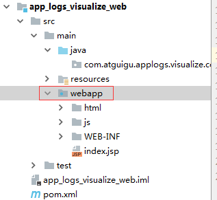
8.1.3 在web.xml文件中加载Spring和Springmvc配置
web.xml
|
<?xml
version="1.0" encoding="UTF-8"?>
<web-app
xmlns:xsi="http://www.w3.org/2001/XMLSchema-instance"
xmlns="http://java.sun.com/xml/ns/javaee"
xsi:schemaLocation="http://java.sun.com/xml/ns/javaee
http://java.sun.com/xml/ns/javaee/web-app_2_5.xsd"
id="WebApp_ID" version="2.5">
<display-name>app_logs_visualize_web</display-name>
<!--欢迎页面入口-->
<welcome-file-list>
<welcome-file>index.html</welcome-file>
<welcome-file>index.htm</welcome-file>
<welcome-file>index.jsp</welcome-file>
<welcome-file>default.html</welcome-file>
<welcome-file>default.htm</welcome-file>
<welcome-file>default.jsp</welcome-file>
</welcome-file-list>
<!--1 spring加载配置-->
<listener>
<listener-class>org.springframework.web.context.ContextLoaderListener</listener-class>
</listener>
<context-param>
<param-name>contextConfigLocation</param-name>
<param-value>classpath:beans.xml</param-value>
</context-param>
<!--2 springmvc加载配置-->
<servlet>
<servlet-name>dispatcher</servlet-name>
<servlet-class>org.springframework.web.servlet.DispatcherServlet</servlet-class>
<init-param>
<param-name>contextConfigLocation</param-name>
<param-value>classpath:dispatcher-servlet.xml</param-value>
</init-param>
<load-on-startup>1</load-on-startup>
</servlet>
<servlet-mapping>
<servlet-name>dispatcher</servlet-name>
<url-pattern>/</url-pattern>
</servlet-mapping>
<!--3 解决传输中文乱码-->
<filter>
<filter-name>characterEncodingFilter</filter-name>
<filter-class>org.springframework.web.filter.CharacterEncodingFilter
</filter-class>
<init-param>
<param-name>encoding</param-name>
<param-value>UTF-8</param-value>
</init-param>
<init-param>
<param-name>forceEncoding</param-name>
<param-value>true</param-value>
</init-param>
</filter>
<filter-mapping>
<filter-name>characterEncodingFilter</filter-name>
<url-pattern>/*</url-pattern>
</filter-mapping>
</web-app>
|
8.1.4 在resources路径下添加Springmvc配置文件
1）添加文件
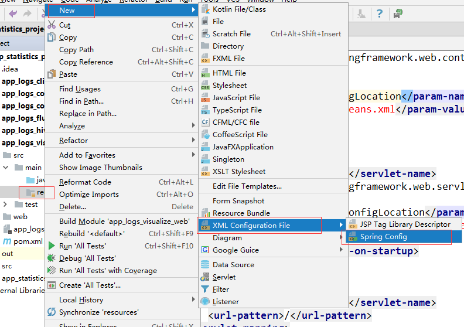
2）编写文件：dispatcher-servlet.xml
|
<?xml
version="1.0" encoding="UTF-8"?>
<beans
xmlns="http://www.springframework.org/schema/beans"
xmlns:xsi="http://www.w3.org/2001/XMLSchema-instance"
xmlns:mvc="http://www.springframework.org/schema/mvc"
xmlns:context="http://www.springframework.org/schema/context"
xsi:schemaLocation="http://www.springframework.org/schema/beans
http://www.springframework.org/schema/beans/spring-beans.xsd
http://www.springframework.org/schema/mvc
http://www.springframework.org/schema/mvc/spring-mvc.xsd
http://www.springframework.org/schema/context
http://www.springframework.org/schema/context/spring-context.xsd
">
<mvc:annotation-driven/>
<!-- 添加静态资源 -->
<mvc:resources
mapping="/html/**" location="/html/"/>
<mvc:resources
mapping="/js/**" location="/js/"/>
<!-- 扫描控制器 -->
<context:component-scan
base-package="com.atguigu.applogs.visualize.controller"/>
<!-- 配置视图解析器 -->
<bean
id="viewResolver"
class="org.springframework.web.servlet.view.InternalResourceViewResolver">
<property
name="prefix" value="/"/>
<property
name="suffix" value=".jsp"/>
</bean>
</beans>
|
3）创建package：
com.atguigu.applogs.visualize.controller
com.atguigu.applogs.visualize.service
com.atguigu.applogs.visualize.dao
com.atguigu.applogs.visualize.domain
8.1.5 在resources路径下添加Spring配置文件
1）添加文件
2）编写文件：beans.xml
|
<?xml
version="1.0" encoding="UTF-8"?>
<beans
xmlns="http://www.springframework.org/schema/beans"
xmlns:tx="http://www.springframework.org/schema/tx"
xmlns:aop="http://www.springframework.org/schema/aop"
xmlns:context="http://www.springframework.org/schema/context"
xmlns:xsi="http://www.w3.org/2001/XMLSchema-instance"
xsi:schemaLocation="http://www.springframework.org/schema/beans
http://www.springframework.org/schema/beans/spring-beans.xsd
http://www.springframework.org/schema/context
http://www.springframework.org/schema/context/spring-context-4.3.xsd
http://www.springframework.org/schema/tx
http://www.springframework.org/schema/tx/spring-tx-4.3.xsd
http://www.springframework.org/schema/aop
http://www.springframework.org/schema/aop/spring-aop-4.3.xsd">
<!-- 扫描service包 -->
<context:component-scan
base-package="com.atguigu.applogs.visualize.service" />
<!-- 连接hive数据源 -->
<bean
id="dataSource"
class="com.mchange.v2.c3p0.ComboPooledDataSource">
<property
name="driverClass"
value="org.apache.hive.jdbc.HiveDriver" />
<property
name="jdbcUrl"
value="jdbc:hive2://192.168.1.103:10000/applogsdb" />
<property
name="user" value="atguigu" />
<property
name="password" value="" />
</bean>
<bean
id="sqlSessionFactoryBean"
class="org.mybatis.spring.SqlSessionFactoryBean">
<property
name="dataSource" ref="dataSource" />
<property
name="configLocation"
value="classpath:mybatis-config.xml" />
</bean>
<bean
id="statMapper"
class="org.mybatis.spring.mapper.MapperFactoryBean">
<property name="mapperInterface"
value="com.atguigu.applogs.visualize.dao.StatMapper"></property>
<property
name="sqlSessionFactory" ref="sqlSessionFactoryBean"></property>
</bean>
</beans>
|
3）在com.atguigu.applogs.visualize.dao 路径下创建StatMapper接口
|
package com.atguigu.applogs.visualize.dao;
public interface StatMapper<T> {
}
|
7.1.6 在resources路径下添加mybatis配置文件
mybatis-config.xml
|
<?xml version="1.0"
encoding="UTF-8" ?>
<!DOCTYPE
configuration
PUBLIC
"-//mybatis.org//DTD Config 3.0//EN"
"http://mybatis.org/dtd/mybatis-3-config.dtd">
<configuration>
<mappers>
<mapper resource="StatMapper.xml" />
</mappers>
</configuration>
|
7.1.7 在resources路径下添加mybatis的mapper配置文件
StatMapper.xml
|
<?xml
version="1.0" encoding="UTF-8" ?>
<!DOCTYPE mapper
PUBLIC
"-//mybatis.org//DTD Mapper 3.0//EN"
"http://mybatis.org/dtd/mybatis-3-mapper.dtd">
<mapper
namespace="com.atguigu.applogs.visualize.dao.StatMapper">
<!-- 查询新增用户 -->
<select
id="findNewUsers" resultMap="rm_StatBean">
select count(*) stcount
from ext_startup_logs
</select>
<resultMap
id="rm_StatBean"
type="com.atguigu.applogs.visualize.domain.StatBean">
<result
column="stcount" property="count" />
</resultMap>
<select
id="findThisWeekNewUsers" resultMap="rm_weekUser">
select
formattime(t.mintime,'yyyy/MM/dd') stdate , count(*) stcount
from (
select deviceid,min(createdatms)
mintime
from ext_startup_logs
where appid = #{appid} group
by deviceid having mintime >= getweekbegin() and mintime <
getweekbegin(1)
) t
group by
formattime(t.mintime,'yyyy/MM/dd')
</select>
<resultMap
id="rm_weekUser"
type="com.atguigu.applogs.visualize.domain.StatBean">
<result
column="stcount" property="count" />
<result column="stdate"
property="date" />
</resultMap>
</mapper>
|
7.1.8 在resources路径下添加log4j文件
log4j.properties
|
log4j.rootLogger=info, stdout
log4j.appender.stdout=org.apache.log4j.ConsoleAppender
log4j.appender.stdout.layout=org.apache.log4j.PatternLayout
log4j.appender.stdout.layout.ConversionPattern=%d{yyyy-MM-dd HH:mm:ss,SSS} %5p
--- [%50t] %-80c(line:%5L) :
%m%n
log4j.appender.R=org.apache.log4j.RollingFileAppender
log4j.appender.R.File=analysis.log
log4j.appender.R.MaxFileSize=1024KB
log4j.appender.R.MaxBackupIndex=1
log4j.appender.R.layout=org.apache.log4j.PatternLayout
log4j.appender.R.layout.ConversionPattern=%d{yyyy-MM-dd HH:mm:ss,SSS} %5p
--- [%50t] %-80c(line:%6L) :
%m%n
|
7.1.9 在hive端启动hiveserver2
[atguigu@hadoop103 lib]$ hive --service hiveserver2 &
8.2 代码逻辑实现
8.2.1 准备统计结果bean
|
package com.atguigu.applogs.visualize.domain;
/**
* 统计信息
*/
public class StatBean
{
//统计日期
private
String date ;
//统计数量
private
long count ;
public String getDate() {
return date;
}
public void setDate(String
date) {
this.date = date;
}
public long getCount() {
return count;
}
public void setCount(long count)
{
this.count = count;
}
}
|
8.2.2 编写controller逻辑
|
package com.atguigu.applogs.visualize.controller;
import com.atguigu.applogs.visualize.domain.StatBean;
import com.atguigu.applogs.visualize.service.StatService;
import org.springframework.stereotype.Controller;
import org.springframework.web.bind.annotation.RequestMapping;
import org.springframework.web.bind.annotation.ResponseBody;
import javax.annotation.Resource;
import java.util.ArrayList;
import java.util.HashMap;
import java.util.List;
import java.util.Map;
/**
* 统计分析类
*/
@Controller
@RequestMapping("/stat")
public class StatController {
@Resource(name="statService")
private StatService ss ;
/**
* 统计每周每天新增用户数
*/
@RequestMapping("/week1")
@ResponseBody
public Map<String,
Object> stat3() {
// 1 查询每周每天新增用户数
List<StatBean>
list = ss.findThisWeekNewUsers("sdk34734");
Map<String,Object> map = new
HashMap<String,Object>();
String[] xlabels = new String[list.size()]
;
long[] newUsers = new
long[list.size()];
// 2 将查询结果复制给数组
for(int i = 0 ; i < list.size() ; i ++){
xlabels[i] = list.get(i).getDate();
newUsers[i] =
list.get(i).getCount();
}
// 3 把数组复制给map集合
map.put("date",xlabels);
map.put("count",
newUsers);
return map ;
}
}
|
8.2.3 编写service逻辑
1)
编写StatService接口
|
package
com.atguigu.applogs.visualize.service;
import com.atguigu.applogs.visualize.domain.StatBean;
import java.util.List;
/**
* Service
*/
public interface StatService {
List<StatBean>
findThisWeekNewUsers(String appid);
}
|
2)
编写StatService接口实现类
|
package com.atguigu.applogs.visualize.service;
import com.atguigu.applogs.visualize.dao.StatMapper;
import com.atguigu.applogs.visualize.domain.StatBean;
import org.springframework.beans.factory.annotation.Autowired;
import org.springframework.stereotype.Service;
import java.util.List;
/**
* 统计服务
*/
@Service("statService")
public class StatServiceImpl implements StatService {
@Autowired
StatMapper statMapper;
@Override
public List<StatBean>
findThisWeekNewUsers(String sdk34734) {
return statMapper.findThisWeekNewUsers(sdk34734);
}
}
|
8.2.4 编写dao逻辑
1）编写到接口
|
package
com.atguigu.applogs.visualize.dao;
import com.atguigu.applogs.visualize.domain.StatBean;
import java.util.List;
/**
* BaseDao接口
*/
public
interface StatMapper<T> {
List<StatBean>
findThisWeekNewUsers(String appid);
}
|
2）具体的dao接口实现类在StatMapper.xml文件中编写
8.3 UI页面数据展示
0） echarts案例网站：http://echarts.baidu.com/echarts2/doc/example.html
1）在用户分析的a标签里面增加id
|
<a id="a_newusers"
href='javascript:;'>新增用户</a>
|
2）对a标签增加异步请求，获取json数据
|
$("#a_newusers").click(function(){
$.getJSON("/stat/week1",function(d){
option.xAxis.data
= d.date;
option.series[0].data
= d.count;
myChart.setOption(option);
});
});
|
8.4 IDEA上执行Web程序
1）配置web执行程序方式
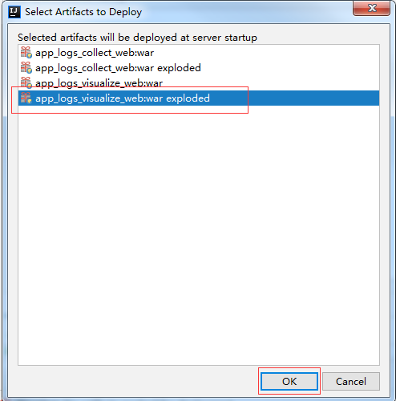
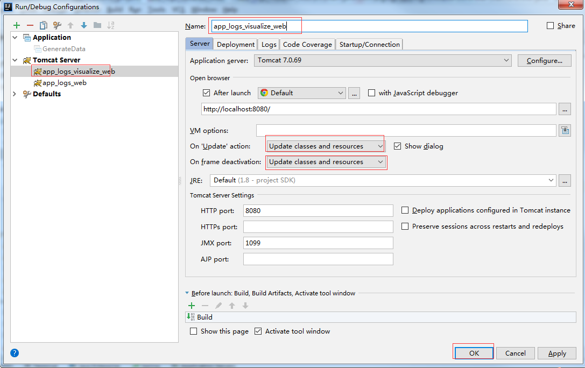
3）向web工程中添加jar包依赖
九 项目总结
1）项目数据基本完整。
2）数据查询没有达到实时，应该将hive查询的结果保存到mysql数据库中，数据展示服务查询时，可以在mysql中查询，提高查询速度。
3）数据展示模块，只做了一组数据的查询，后续可以将所有业务查询都展示到页面上。
4）目前所有业务主要是针对启动日志进行分析，没有对其他4种日志进行分析。
5）集群启动关闭，可以采用shell脚本。
6) hiveserver2 配置
vim conf/hive-site.xml
|
<!-- 显示表头-->
<property>
<name>hive.cli.print.header</name>
<value>true</value>
</property>
<!-- 显示库名 -->
<property>
<name>hive.cli.print.current.db</name>
<value>true</value>
</property>
<!--
hive远程访问代理服务uri集合-->
<property>
<name>hive.metastore.uris</name>
<value>thrift://localhost:9083</value>
</property>
<!--
hive远程访问代理服务绑定端口
-->
<property>
<name>hive.server2.thrift.port</name>
<value>10000</value>
</property>
<!--
hive远程访问代理服务绑定主机
-->
<property>
<name>hive.server2.thrift.bind.host</name>
<value>localhost</value>
</property>
<!--
hive远程访问代理服务超时-->
<property>
<name>hive.server2.long.polling.timeout</name>
<value>5000</value>
</property>
|
启动源数据存储访问服务
sudo nohup hive –service metastore
2>&1 &
ps -ef | grep metastore >> RunJar
启动hiveserver2
sudo nohup hive –service hiveserver2
2>&1 &
ps -ef | grep hiveserver2 >> RunJar
尝试远程访问hiveserver2 (注这里的 user passwd 必须是可通过 HQL 执行 MR 的授权用户)
beeline -u jdbc:hive2://localhost:10000
-n "huhao" -p 'huhao'
等效于
huhao:conf huhao$ beeline
beeline> !connect jdbc:hive2://localhost:10000 huhao huhao
0: jdbc:hive2://localhost:10000> show databases;
+----------------+--+
| database_name |
+----------------+--+
| applogsdb |
| default |
+----------------+--+
2 rows selected (2.475 seconds)
0: jdbc:hive2://localhost:10000> use applogsdb;
No rows affected (0.092 seconds)
0: jdbc:hive2://localhost:10000> select count(*) from
ext_error_logs;
+------+--+
| _c0 |
+------+--+
| 4 |
+------+--+
十 问题总结
1）执行hive自定义函数时，报如下错误：
（1）问题描述
|
hive (applogsdb)> select formattime(t.mintime,'yyyy/MM/dd')
stdate , count(*) stcount
> from (
> select deviceid,min(createdatms)
mintime
> from ext_startup_logs
> where appid = 'sdk34734' group by
deviceid having mintime >= getweekbegin() and mintime < getweekbegin(1)
> ) t
> group by
formattime(t.mintime,'yyyy/MM/dd');
WARNING: Hive-on-MR is deprecated in Hive
2 and may not be available in the future versions. Consider using a different
execution engine (i.e. spark, tez) or using Hive 1.X releases.
Query ID =
atguigu_20171108101504_776b483d-2888-4059-a96b-669f7ad18e2e
Total jobs = 2
Launching Job 1 out of 2
Number of reduce tasks not specified.
Estimated from input data size: 1
In order to change the average load for a
reducer (in bytes):
set hive.exec.reducers.bytes.per.reducer=<number>
In order to limit the maximum number of
reducers:
set hive.exec.reducers.max=<number>
In order to set a constant number of
reducers:
set mapreduce.job.reduces=<number>
Starting Job = job_1510104352730_0007,
Tracking URL = http://hadoop103:8088/proxy/application_1510104352730_0007/
Kill Command =
/opt/module/hadoop-2.7.2/bin/hadoop job
-kill job_1510104352730_0007
Hadoop job information for Stage-1:
number of mappers: 0; number of reducers: 1
2017-11-08 10:15:50,492 Stage-1 map =
0%, reduce = 0%
2017-11-08 10:16:17,854 Stage-1 map =
0%, reduce = 100%
Ended Job = job_1510104352730_0007 with
errors
Error during job, obtaining debugging
information...
Examining task ID:
task_1510104352730_0007_r_000000 (and more) from job job_1510104352730_0007
Task with the most failures(4):
-----
Task ID:
task_1510104352730_0007_r_000000
URL:
http://hadoop103:8088/taskdetails.jsp?jobid=job_1510104352730_0007&tipid=task_1510104352730_0007_r_000000
-----
Diagnostic Messages for this Task:
Error: java.lang.RuntimeException: Error
in configuring object
at org.apache.hadoop.util.ReflectionUtils.setJobConf(ReflectionUtils.java:112)
at
org.apache.hadoop.util.ReflectionUtils.setConf(ReflectionUtils.java:78)
at
org.apache.hadoop.util.ReflectionUtils.newInstance(ReflectionUtils.java:136)
at org.apache.hadoop.mapred.ReduceTask.runOldReducer(ReduceTask.java:409)
at org.apache.hadoop.mapred.ReduceTask.run(ReduceTask.java:392)
at org.apache.hadoop.mapred.YarnChild$2.run(YarnChild.java:164)
at java.security.AccessController.doPrivileged(Native Method)
at javax.security.auth.Subject.doAs(Subject.java:415)
at
org.apache.hadoop.security.UserGroupInformation.doAs(UserGroupInformation.java:1657)
at org.apache.hadoop.mapred.YarnChild.main(YarnChild.java:158)
Caused by:
java.lang.reflect.InvocationTargetException
at sun.reflect.NativeMethodAccessorImpl.invoke0(Native Method)
at
sun.reflect.NativeMethodAccessorImpl.invoke(NativeMethodAccessorImpl.java:57)
at
sun.reflect.DelegatingMethodAccessorImpl.invoke(DelegatingMethodAccessorImpl.java:43)
at java.lang.reflect.Method.invoke(Method.java:606)
at
org.apache.hadoop.util.ReflectionUtils.setJobConf(ReflectionUtils.java:109)
... 9 more
Caused by: java.lang.RuntimeException:
Reduce operator initialization failed
at
org.apache.hadoop.hive.ql.exec.mr.ExecReducer.configure(ExecReducer.java:157)
... 14 more
Caused by:
java.lang.UnsupportedClassVersionError: com/atguigu/hive/FormatTimeUDF :
Unsupported major.minor version 52.0
at java.lang.ClassLoader.defineClass1(Native Method)
at java.lang.ClassLoader.defineClass(ClassLoader.java:800)
at
java.security.SecureClassLoader.defineClass(SecureClassLoader.java:142)
at java.net.URLClassLoader.defineClass(URLClassLoader.java:449)
at
java.net.URLClassLoader.access$100(URLClassLoader.java:71)
at java.net.URLClassLoader$1.run(URLClassLoader.java:361)
at java.net.URLClassLoader$1.run(URLClassLoader.java:355)
at java.security.AccessController.doPrivileged(Native Method)
at java.net.URLClassLoader.findClass(URLClassLoader.java:354)
at java.lang.ClassLoader.loadClass(ClassLoader.java:425)
at sun.misc.Launcher$AppClassLoader.loadClass(Launcher.java:308)
at java.lang.ClassLoader.loadClass(ClassLoader.java:358)
at java.lang.Class.forName0(Native Method)
at java.lang.Class.forName(Class.java:274)
at
org.apache.hadoop.hive.ql.udf.generic.GenericUDFBridge.getUdfClassInternal(GenericUDFBridge.java:142)
at
org.apache.hadoop.hive.ql.udf.generic.GenericUDFBridge.initialize(GenericUDFBridge.java:154)
at
org.apache.hadoop.hive.ql.udf.generic.GenericUDF.initializeAndFoldConstants(GenericUDF.java:139)
at org.apache.hadoop.hive.ql.exec.ExprNodeGenericFuncEvaluator.initialize(ExprNodeGenericFuncEvaluator.java:145)
at
org.apache.hadoop.hive.ql.exec.GroupByOperator.initializeOp(GroupByOperator.java:210)
at
org.apache.hadoop.hive.ql.exec.Operator.initialize(Operator.java:358)
at
org.apache.hadoop.hive.ql.exec.Operator.initialize(Operator.java:546)
at
org.apache.hadoop.hive.ql.exec.Operator.initializeChildren(Operator.java:498)
at
org.apache.hadoop.hive.ql.exec.Operator.initialize(Operator.java:368)
at org.apache.hadoop.hive.ql.exec.Operator.initialize(Operator.java:546)
at
org.apache.hadoop.hive.ql.exec.Operator.initializeChildren(Operator.java:498)
at
org.apache.hadoop.hive.ql.exec.Operator.initialize(Operator.java:368)
at org.apache.hadoop.hive.ql.exec.Operator.initialize(Operator.java:546)
at
org.apache.hadoop.hive.ql.exec.Operator.initializeChildren(Operator.java:498)
at
org.apache.hadoop.hive.ql.exec.Operator.initialize(Operator.java:368)
at org.apache.hadoop.hive.ql.exec.mr.ExecReducer.configure(ExecReducer.java:150)
... 14 more
FAILED: Execution Error, return code 2
from org.apache.hadoop.hive.ql.exec.mr.MapRedTask
MapReduce Jobs Launched:
Stage-Stage-1: Reduce: 1 HDFS Read: 0 HDFS Write: 0 FAIL
Total MapReduce CPU Time Spent: 0 msec
|
（2）问题原因：原来hadoop集群配置的是jdk1.7版本，后升级为jdk1.8。
升级后HAOOP_HOME还是配置的jdk1.7路径。
（3）问题解决
A)更改：hadoop-env.sh、mapred-env.sh、yarn-env.sh三个文件中的HAOOP_HOME。
B)一定要添加jar包
hive (applogsdb)> add jar
/opt/module/hive/lib/app_logs_hive.jar
2）flume和hive最好放到同一台设备上、或者保证服务器时间同步。
3）flume启动就失败， 查看hadoop是否加载成功， 不成功可以将hadoop所有jar包拷贝到flume/lib目录下。